Independent research & data-organization project
California's Forgotten Past
The Arsenic Cattle-Dipping Era
An independent, hypothesis-neutral investigation into California's state-mandated arsenical cattle-tick dipping program (1907 to 1912) and the South Orange County communities built on the former ranch land.

Watch: a short documentary on the investigation, by the Stavros Group.
Archives that may still hold the record
Where a vat could still be named, and how you can help.
California never logged where its arsenic dipping vats stood. That single missing fact, the exact location of a vat on this land, is the one thing the public paper trail cannot yet close. The records that could still name one are most likely sitting in a small number of collections that have not been fully searched. Records requests have been drafted but not yet pulled.
If you work at, volunteer with, or simply have access to any of the collections below, you can help. A single ledger page, ranch map, veterinarian order, or vat-count entry could move this forward. Please reach out through the contact form. Every lead is checked, sourced, and credited, and nothing here assumes what those records will show.
- Sherman Library, Corona del Mar. O'Neill and Irvine Ranch business records, ledgers, and photo albums.
- UCI Special Collections, Irvine. Ranch collections and oral histories.
- Rancho Mission Viejo archive. The private corporate ranch records, 1900 to 1920.
- Orange County Archives, Santa Ana. County Veterinarian orders and Board of Supervisors minutes, 1907 to 1913.
- California State Archives, Sacramento. Department of Agriculture cattle-protection vat-count files.
- San Juan Capistrano Historical Society. Local ranch photographs and records.
- Camp Pendleton Historical Society. Santa Margarita ranch (O'Neill) holdings.
- Starr Ranch Sanctuary (Audubon), Bell Canyon. The one documented dip ground in the study area.
- The Huntington Library, San Marino. Historic ranch maps and aerials.
- USC and UCLA Special Collections. Historic Southern California ranch photography.
The drafted requests are public, so anyone can pick up a thread: research/archives/RECORDS_REQUESTS_2026-07.md.
If you can add a collection, correct a holding, or share a document, it becomes part of the report, with credit.
This is an independent research project; it asks only for records and makes no claim about what any of them will contain.
Introduction
From 1907 to March 1912, the State of California and the USDA compelled cattle ranchers in quarantined counties to dip every animal in an arsenic solution, 8 pounds of white arsenic (arsenic trioxide) to 500 gallons, poured through swim vats, season after season. Arsenic is an element: it does not decay, it binds to soil, and it stays where it was spilled. The Southeast ran its program with government crews and logged its vat sites, Florida still knows where 3,000+ of them are. Australia later built a register and tells buyers before they purchase former dip land. California assigned the work to individual ranches by mailed circular, recorded no locations, and never returned to the question. Decades later, master-planned communities rose on those ranges, screened by environmental reviews whose records reach back to the 1950s, four decades after the vats were filled in.
This report examines that blind spot area by area, beginning with Ladera Ranch, then the one documented dip ranch at Bell Canyon / Coto de Caza, then the wider county and state. For each area it shows the ranch history, the dipping evidence tier, the historical imagery, exactly which environmental review existed, what was tested, and whether arsenic, and which arsenic, was ever among the analytes, and every school in the area. Two arsenic signatures matter throughout: lead-arsenate (orchard pesticide: arsenic with lead) and arsenic trioxide (the cattle-dip poison: arsenic with little or no lead). Where California tested at all, it tested for the first. It has never, anywhere, tested for the second.
This platform is an independent research and data-organization project. It does not provide medical advice and does not establish that any pesticide, property, organization, employer, school, water provider, government agency, or other party caused any illness. Publicly reported health events may not have been independently medically verified. Geographic and temporal overlap does not establish exposure or causation. Formal conclusions require authorized epidemiological analysis, verified medical information, exposure assessment, toxicological review, and independent scientific evaluation.
How to read the grades: A1 official dataset/peer-reviewed · A2 official record/GIS · B1 research-institution · B2 named-source press · C advocacy/unverified · D speculation. MODEL ESTIMATE = calculated plausibility bound, not a measurement. Absence of record ≠ absence of fact.
The California story, 1769-2026
The land. Southern California's coastal hills spent 150 years as cattle country, mission herds, then Mexican land-grant ranchos, then the great consolidated ranches: the O'Neill/Flood Rancho Santa Margarita system holding "nearly half the southern portion of Orange" county [B2, LA Herald 1908], the Irvine Ranch's ~100,000 acres, the Bixby operations at Los Cerritos, Tejon, Miller & Lux. The master-planned communities of today, Ladera Ranch, Coto de Caza, Mission Viejo, Rancho Santa Margarita, Irvine, Newport Coast, were built directly on those ranges, most of them between 1965 and 2006.
The crisis. In 1906 the USDA opened its national war on the Texas-fever cattle tick. The 1907 survey named six California counties "heavily infested", San Luis Obispo, Santa Barbara, San Diego, Orange, Fresno, Ventura [A1, USDA BAI Circular 174]. A federal quarantine line went around them, and California passed a law compelling cattle owners to dip.
The federal government's own instructions to California ranchers survive, Eradicating Cattle Ticks in California (USDA BAI Circular 174, 1911), the document at the center of this history:
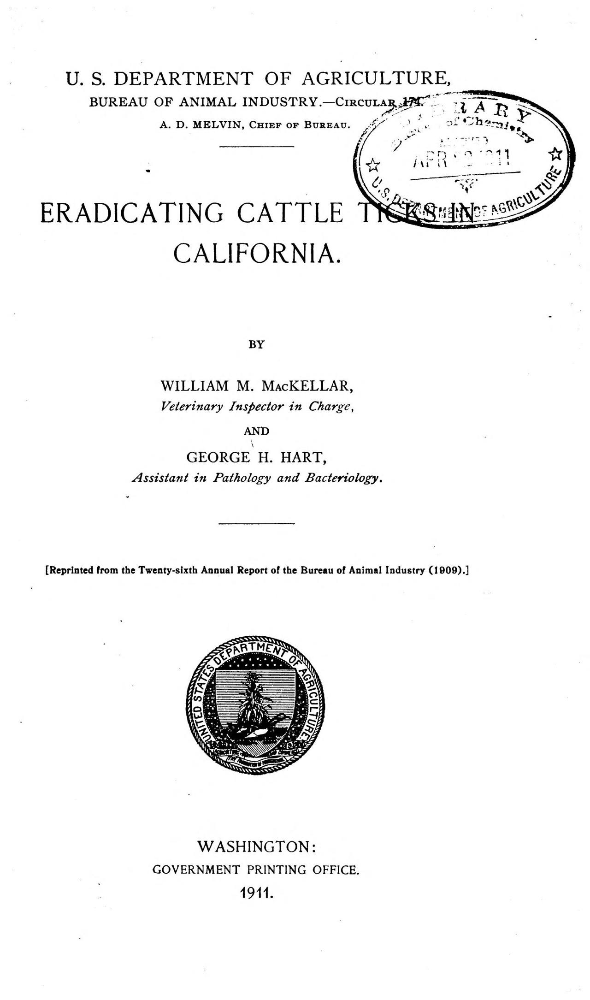
evidence/images/usda_bai_circ174_1911_cover.jpg
The mandate. The prescribed bath was arsenical: 8 pounds of white arsenic (arsenic trioxide), 24 pounds of sal soda, and a gallon of pine tar to every 500 gallons of water, roughly 1,450 mg of arsenic per liter, potent enough that the USDA printed a standing warning for every vat [A1]:
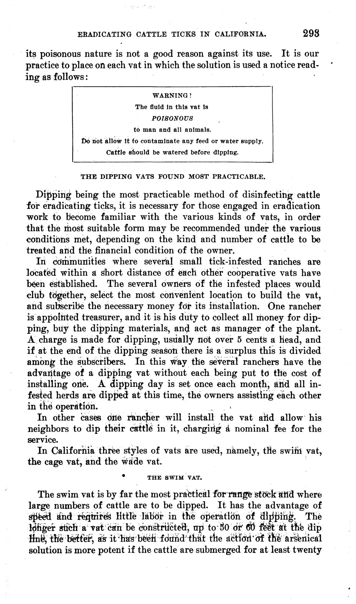
evidence/images/usda_bai_circ174_1911_p293_VAT_POISON_WARNING_sign_text.png
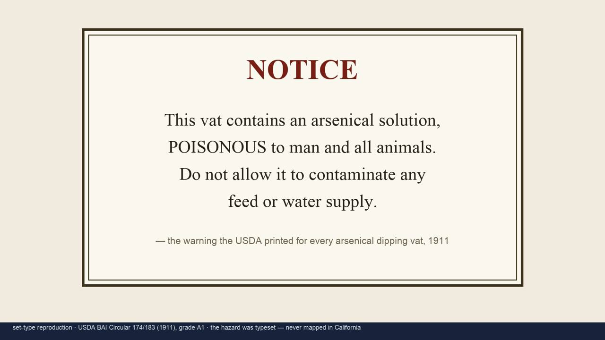
media/broll/boards/B4_usda_warning_sign.jpg
How the vats were built. The government supplied standardized engineering drawings, long, narrow, deep concrete or brick troughs cattle were forced to swim through, with an entrance chute and a draining pen. These are the plans California ranchers built from:
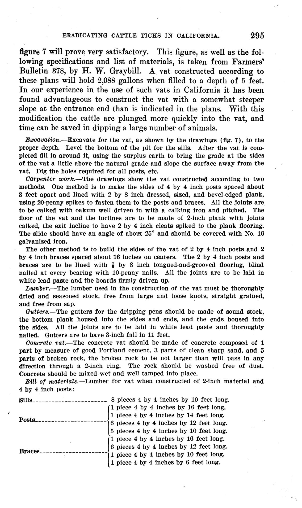
evidence/images/usda_bai_circ174_1911_p295_fig7_swim_vat_plans.png
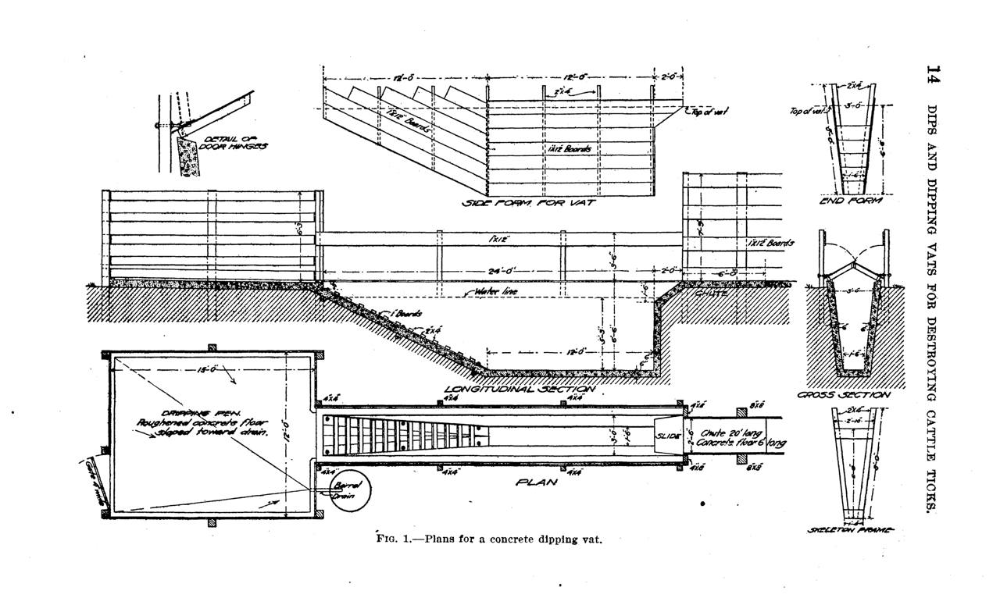
evidence/images/usda_bai_circ207_1912_fig1_concrete_dipping_vat_plan.png
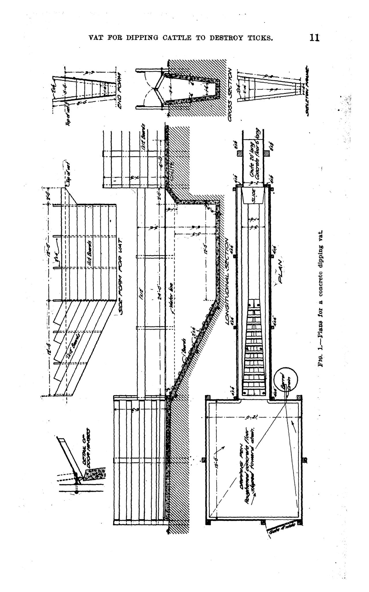
evidence/images/usda_bai_circ183_1911_concrete_vat_plate.png
What it looked like. Cattle were driven single-file down the chute and plunged through the arsenic bath, swimming its length and climbing out into a drain pen where the fluid ran back toward the vat. The process is unchanged where fever-tick dipping still operates today:
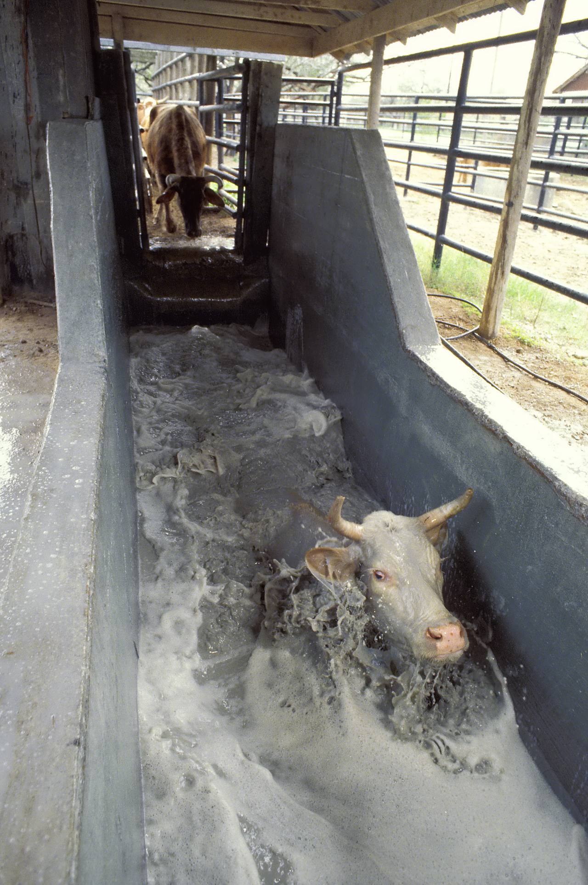
evidence/images/illustrative/USDA_ARS_cattle_fever_tick_dipping_vat_PD.jpg Illustrative, U.S. Department of Agriculture, Agricultural Research Service (public domain): cattle going through a fever-tick dipping vat in the still-active Texas-Mexico border quarantine. The same national program and vat design; not a photograph of the California operation.
The program in Orange County ran ~1907 to March 1912. Four dip sites are named in the 1908 press, the Joplin ranch in Trabuco Canyon/Bell Canyon, San Juan Capistrano, Yorba, and the Bixby ranch in Santa Ana Canyon, all county-ordered under Veterinary Surgeon & Stock Inspector W. S. McFarlane [B2/B1]. The dipping was real and it was harsh: six of dairyman E. J. Levengood's cattle, bought from Joplin's herd, died of "the arsenic preparation recommended by the Government," and he billed the county $400 [B2].
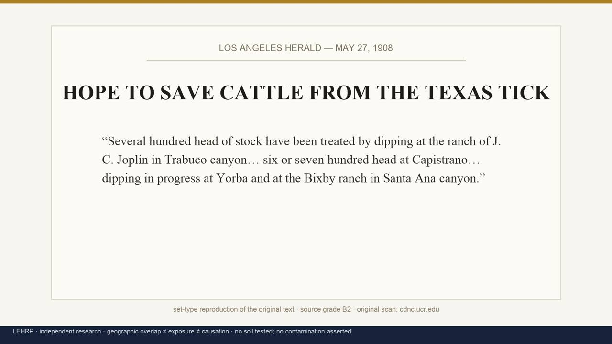
media/broll/boards/B1_clip_1908_dip.jpg
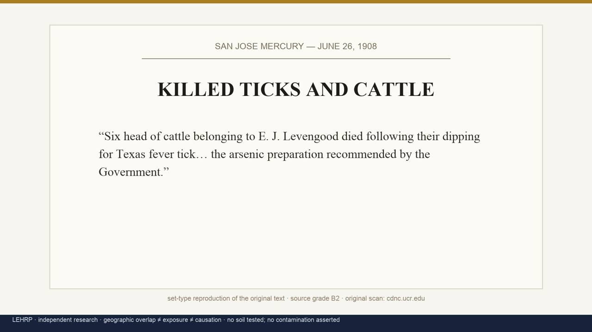
media/broll/boards/B2_clip_1908_killed.jpg
The end, and the vanishing. The state's last quarantine district was proclaimed in March 1912 (township 6 south, range 6 west, the southwest county), and the same month the federal government released Orange County entirely [A2/B2]:
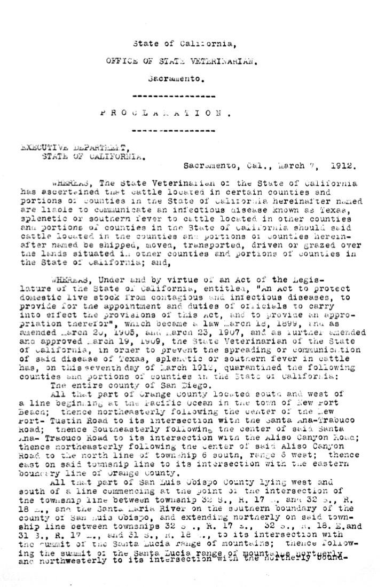
research/oc_dipping_records/proclamation_1912_p1.jpg
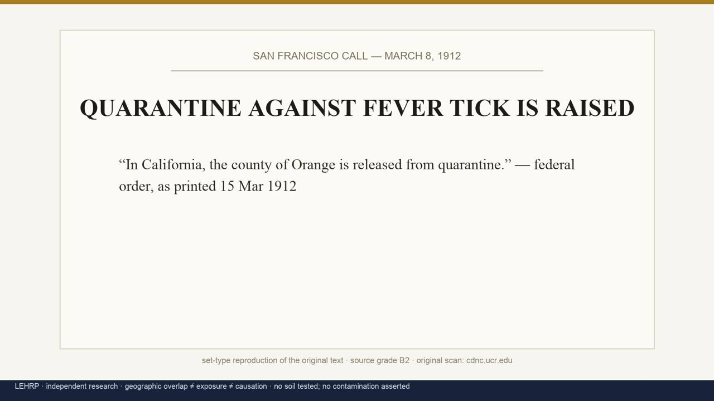
media/broll/boards/B10_clip_1912_quarantine.jpg
When the quarantine ended, the vats were abandoned, broken up, or filled in, and because no California agency had ever recorded where they stood, their locations left the public record the same month the program did. The state map of infestation survives; the map of vats never existed.
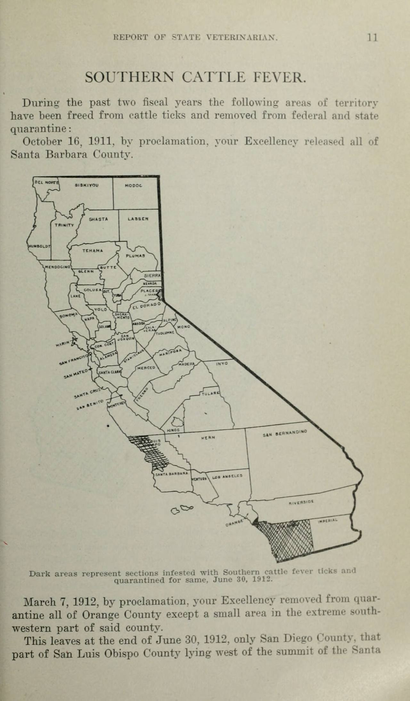
research/oc_dipping_records/statevet_1912_infestation_map_leaf1181.jpg
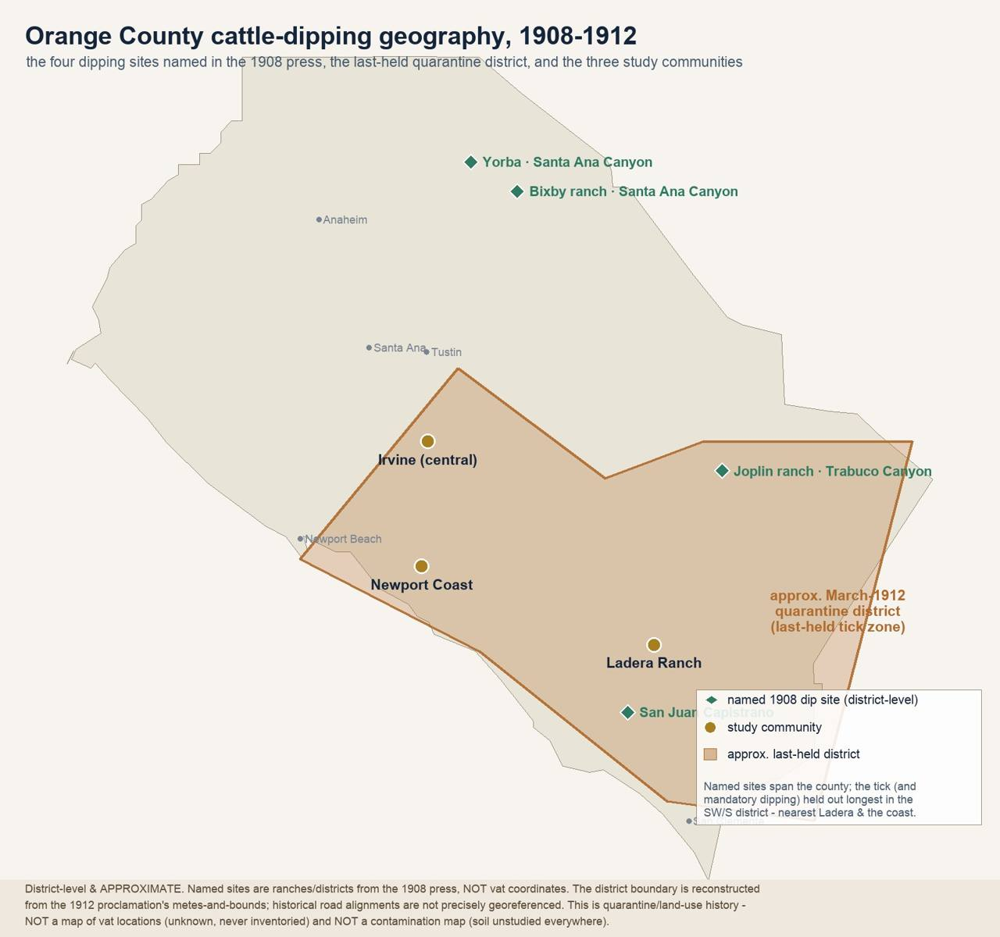
research/oc_dipping_records/oc_dipping_geography_map.jpg
Then: silence. No follow-up in any later decade. When environmental review arrived in the 1970s, its standard tools looked backward through aerial photography that begins ~1950, 38 years after the last OC dip. Every master-planned community that rose on the old ranges was screened by a process structurally unable to see the program at all.
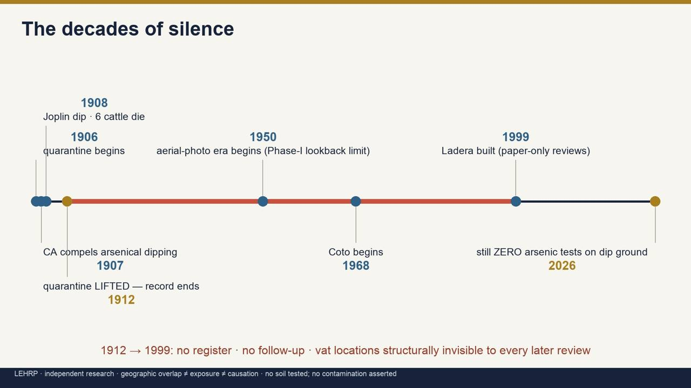
media/broll/boards/B7_timeline.jpg
The discovery of the arsenic mandate
This investigation did not begin with arsenic. It began with reported pediatric cancers in Ladera Ranch and a neutral audit of every environmental pathway. The arsenic thread emerged from the land records, and it took five distinct discoveries to see it whole.
1 · The blind spot. Every environmental review of the Ladera land was a Phase I, records and a site walk. Phase-I practice reconstructs history from aerial photos and databases that begin ~1950. Anything that ended before then is structurally invisible. The question became: what ended before 1950 that no one ever wrote down?
2 · The mandate. USDA Bureau of Animal Industry Circular 174 (1911), Eradicating Cattle Ticks in California, supplied the answer: a state-compelled arsenical dipping program, formula 8 lb white arsenic / 500 gal, in a federal quarantine county [A1]. The hazard was printed, mailed, and nailed to the vat posts. What was never made was a map.
3 · The proof it happened here. The primary press supplied the ground truth: the 27 May 1908 LA Herald naming four county-ordered dip sites; the dead Levengood cattle; the $400 claim; the county veterinarian's name; and in March 1912, the quarantine's end [B2]. One of the four sites, Joplin's, this project later pinned to its federal homestead patent, survey-section precise [A2].
4 · The chemistry that keeps the question open. Arsenic is an element, it cannot decay. At dip sites tested in Australia and the US Southeast, near-vat soil still runs 500-3,000 mg/kg a century later, 40-270× California's natural background [B1]. A mass balance bounded by total program supply puts ~100-500 lb of arsenic in the ground per heavily-used vat and 33,000-165,000 lb statewide [MODEL ESTIMATE, could be off ~10× either way; no CA dip soil has ever been measured].
5 · The comparison that indicts the record, not the ranchers. Florida's program was government-run; its 3,000+ vat sites are known today. New South Wales keeps a register and tells land buyers. California's program was ranch-run from a mailed circular, "homemade dips are the ones most commonly used" [A1, Circular 183], and no agency ever recorded a location. Same science, same era, same chemical. One administrative choice, who kept the list, separates a managed legacy from an invisible one.
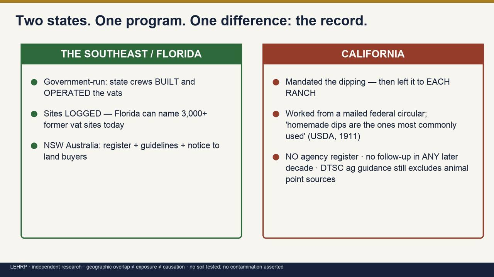
media/broll/boards/B6_fl_vs_ca_process.jpg
The test this history demands, and the two arsenics. Where California has tested old agricultural soil (school sites under DTSC guidance), the target was lead-arsenate, the orchard pesticide, arsenic traveling with lead. The cattle-dip poison is arsenic trioxide, arsenic with little or no lead. A laboratory separates them routinely. No California test has ever targeted the dip signature; that single analysis, on documented ground, is the resolver this report keeps arriving at.
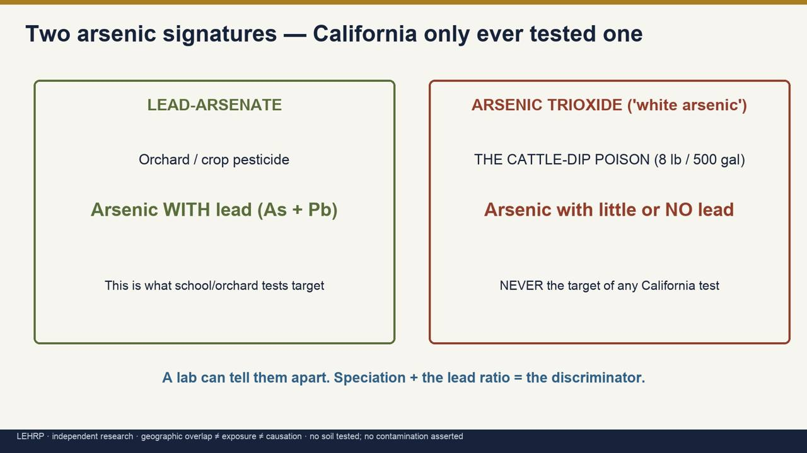
media/broll/boards/B5_two_arsenics.jpg
The health question: Ewing sarcoma, honestly
This investigation began with reported pediatric cancers in Ladera Ranch, primarily Ewing sarcoma. Honesty requires being precise about what that disease is, what arsenic does and does not cause, and where that leaves the arsenic question. The short version: arsenic is a serious carcinogen, but it is not a known cause of Ewing sarcoma, and this report does not claim it is.
The reported cases are treated here as an aggregate, publicly reported pattern [Grade C, public allegation; not independently medically verified]. No individual is identified or inferred, and no case count is presented as established fact. A reported pattern warrants investigation; it does not by itself establish that anything in the environment caused it.
What Ewing sarcoma is
Ewing sarcoma is a bone-and-soft-tissue cancer of children and young adults, defined at the molecular level by a gene fusion, most often EWSR1-FLI1 (a rearrangement joining two genes that do not normally meet). That fusion arises after birth, for reasons that remain unknown, on a germline background that is strongly patterned by ancestry (markedly more common in people of European descent). No environmental exposure has been established as a cause of that fusion. [B1]
What arsenic causes: and does not
Inorganic arsenic is an IARC Group 1 human carcinogen, one of the best-established in toxicology. But its sufficient evidence in humans is for cancers of the urinary bladder, lung, and skin (with kidney/liver/colon at very high drinking-water doses), not bone cancer, and not Ewing sarcoma. [A1/B1]
The one nuance, stated so as not to overstate the case: arsenic is named in some soft-tissue-sarcoma reviews (alongside vinyl chloride and thorium dioxide), and Ewing has a soft-tissue form, so it is not wholly irrelevant. But those associations come from occupational, high-dose exposure, are not Ewing-specific, and are a world away from residential soil. Two further mismatches are decisive:
- Latency and age: arsenic cancers characteristically appear after decades of exposure, in adults, not as a bone tumour in a teenager.
- Mechanism: nothing about arsenic's biology connects to the EWSR1-FLI1 fusion that defines the disease.
Therefore: even if soil arsenic were confirmed on any of these footprints, it would not specifically explain a cluster of Ewing sarcoma. It would still be a genuine public-health finding worth acting on for its own sake, arsenic is a real carcinogen, but it would answer a different question than the one these families are asking. That is the honest conclusion, and this report does not soften it.
Then why keep investigating?
Two reasons, both legitimate:
- Community due diligence. The value of finding out whether a Group-1 carcinogen sits in soil where children play does not depend on which disease prompted the search. If it is there, it should be known and managed regardless.
- The other pathways stay open. The same filter that clears arsenic of Ewing also clears the usual pesticide suspects: glyphosate (IARC 2A, tied to non-Hodgkin lymphoma), 2,4-D (IARC 2B), and glufosinate (EPA: not likely carcinogenic), none has an established Ewing link [B1]. What the bone-cancer literature does repeatedly surface is parental farming and residence on an operating farm, active application, livestock, agricultural dust, reported for Ewing specifically [B1, LIT-007/008]. That is a different exposure from a housing tract built on land that stopped being farmed decades ago, but it keeps agricultural chemistry and occupational exposure legitimately on the table. The single candidate in this whole investigation with a disease-matched published signal is proximity to abandoned oil and gas wells (a weak, non-significant association, stronger in Hispanic children), worth carrying, precisely because it points at the right disease [B2].
The even-handed counterweight (kept in on purpose)
Evidence that lowers the prior on arsenic here, reported plainly: children's urinary arsenic did not correlate with residential soil even above a state soil standard (Middleport, NY); diet dominates arsenic intake (~82%); a systematic review found the childhood-cancer literature does not support an arsenic link; mass grading (1999-2006) likely diluted any surface residue; and Ladera's drinking water is 100% imported, removing the one route that carries almost the entire arsenic toxicity database. [B1]
Bottom line. Keep pesticides and occupational/parental exposure under investigation. Keep the oil-and-gas-well signal in view. Test the soil for arsenic on due-diligence grounds, because it can be measured and either ruled in or ruled out. But do not tell families that arsenic explains Ewing sarcoma. The evidence does not support that, and this platform will not say it.
The map: where the question lives
Nineteen former ranch systems, graded by the probability that arsenical dipping occurred, documented, highly probable, likely, plausible, with today's community named on each. This is a prioritisation of an unanswered question, not a contamination map: no vat is located on it and no soil result exists behind it. The areas that follow are ordered by priority, beginning with Ladera Ranch, then the one documented ranch at Bell Canyon / Coto de Caza.
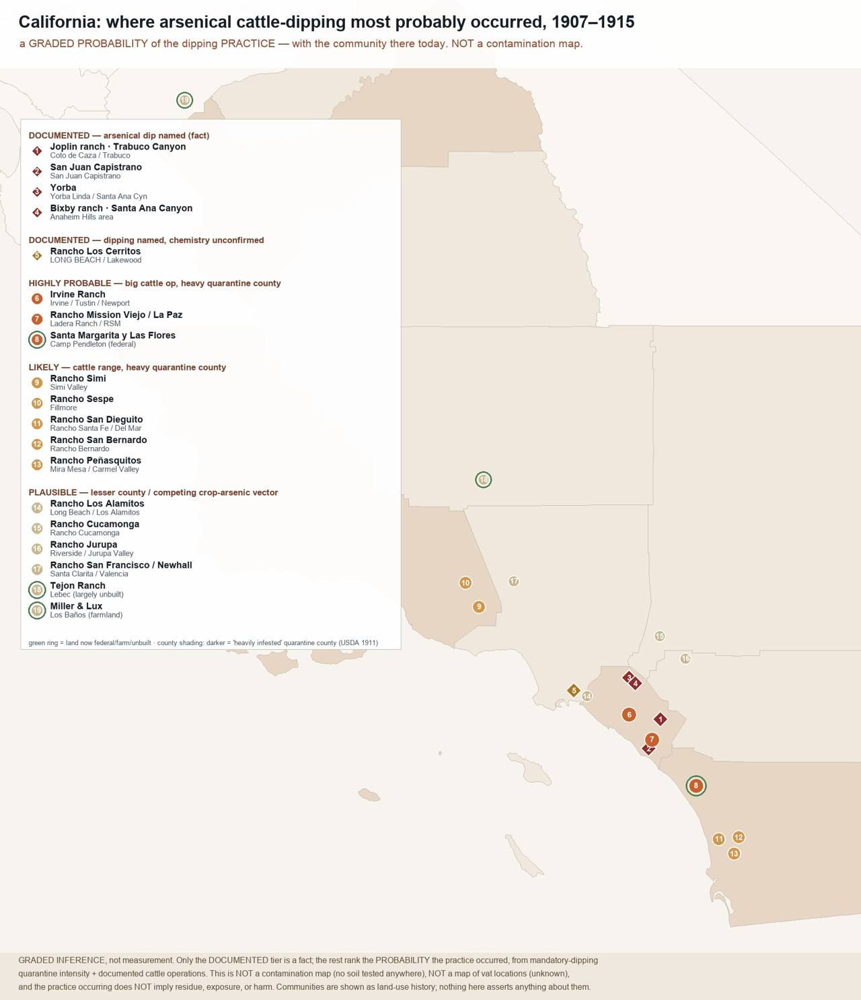
research/statewide/CA_dipping_probability_map.jpg
The same zones over real imagery, the communities that sit on the old ranges today:
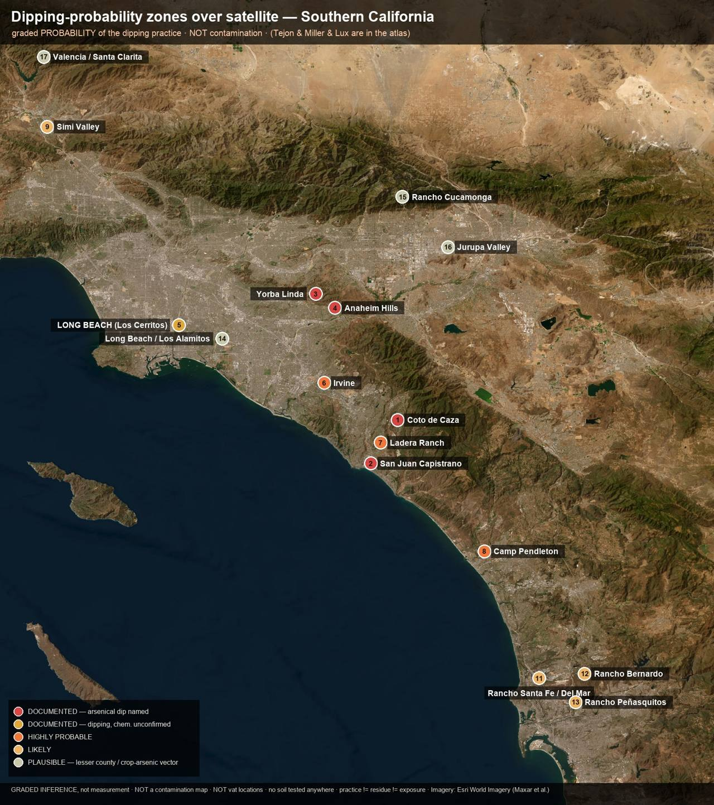
research/statewide/CA_dipping_satellite_overview.jpg
Ladera Ranch: the priority area
Summary. Ladera Ranch (~4,000 acres, built 1999-2006) sits entirely on former O'Neill / Rancho Mission Viejo cattle range, land inside the 1907-1912 arsenical tick-dipping quarantine zone whose ranches "cover[ed] nearly half the southern portion of Orange" county [B2, LA Herald 1 Sep 1908]. No dipping vat has been documented or found on the footprint; no soil there has ever been tested for arsenic. Every environmental review that touched Ladera was a records-and-walk review, not a sampling event. The question this report exists to pose is therefore genuinely open: never looked, not looked-and-cleared.
The ranch this land was
For a century before the master plan, this was cattle country, the O'Neill / Rancho Mission Viejo range. The Rancho Santa Margarita y Las Flores and Mission Viejo lands passed from the Forster family to Charles Crocker, then James Flood, and finally Richard O'Neill, whose sons Jerome O'Neill (who ran the Trabuco Mesa division "ten miles above El Toro") and James O'Neill worked the herds under the "Rafter M" brand [B1/B2, Armor 1921; RMV company history]. The operation ran on vaqueros and foremen, the Baumgartner and Chandler ranch families among the names that recur in the county's ranch photography and oral histories.
evidence/images/usc_chs2360_UC139844_herd_of_cattle_grazing_santa_margarita_ranch_sd_county_1900.jpg
Herd grazing on the O'Neill Santa Margarita ranch, c. 1900 [A2, USC California Historical Society].
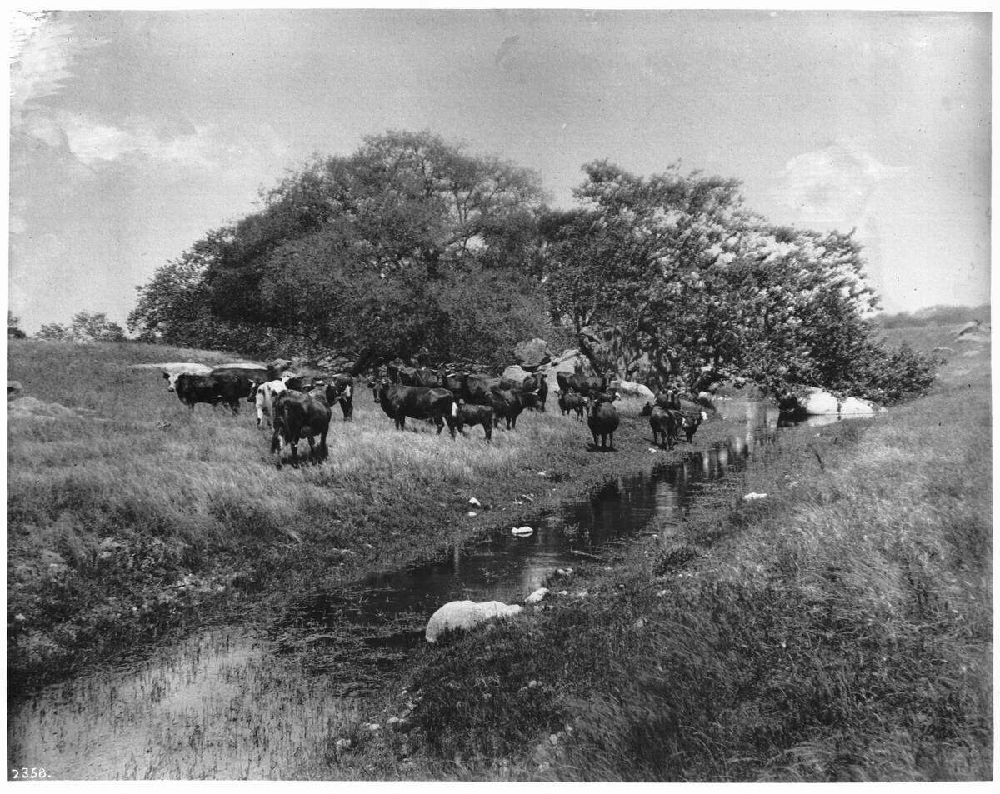
evidence/images/usc_chs2358_UC139843_cattle_grazing_near_small_stream_santa_margarita_ranch_sd_county_1900.jpg Cattle grazing at a stream on the ranch, c. 1900, the everyday reality that made dipping necessary: cattle concentrate at water, and water is where ticks and working grounds both gathered [A2].
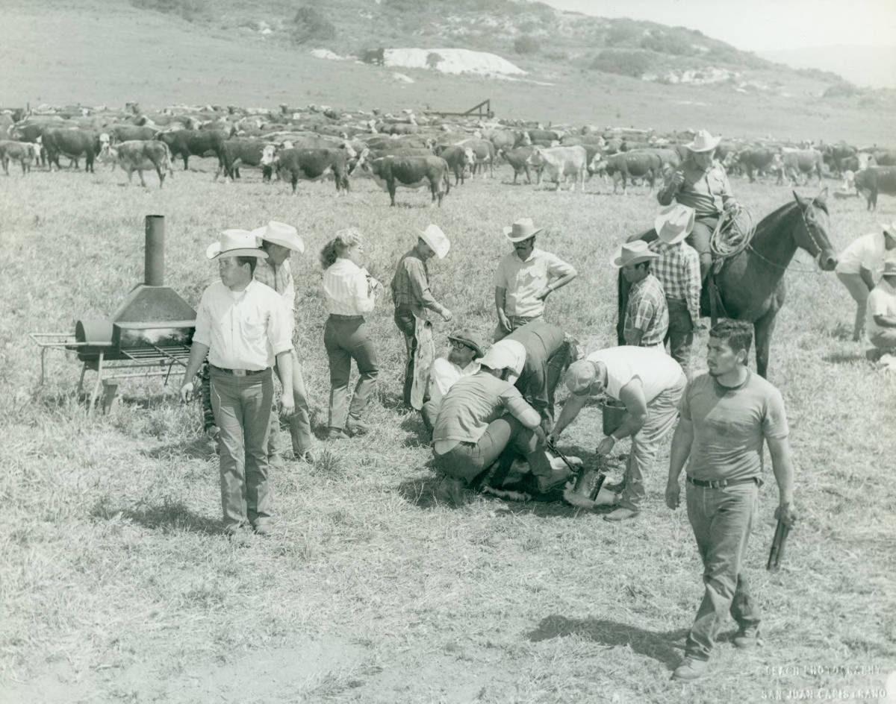
evidence/images/OCPL_OCStories_MissionViejoRanch_roundup_1972_id1279.jpg Roundup on Rancho Mission Viejo, 1972, the cattle operation persisted on this land until development [A2, OC Public Library / OC Stories].
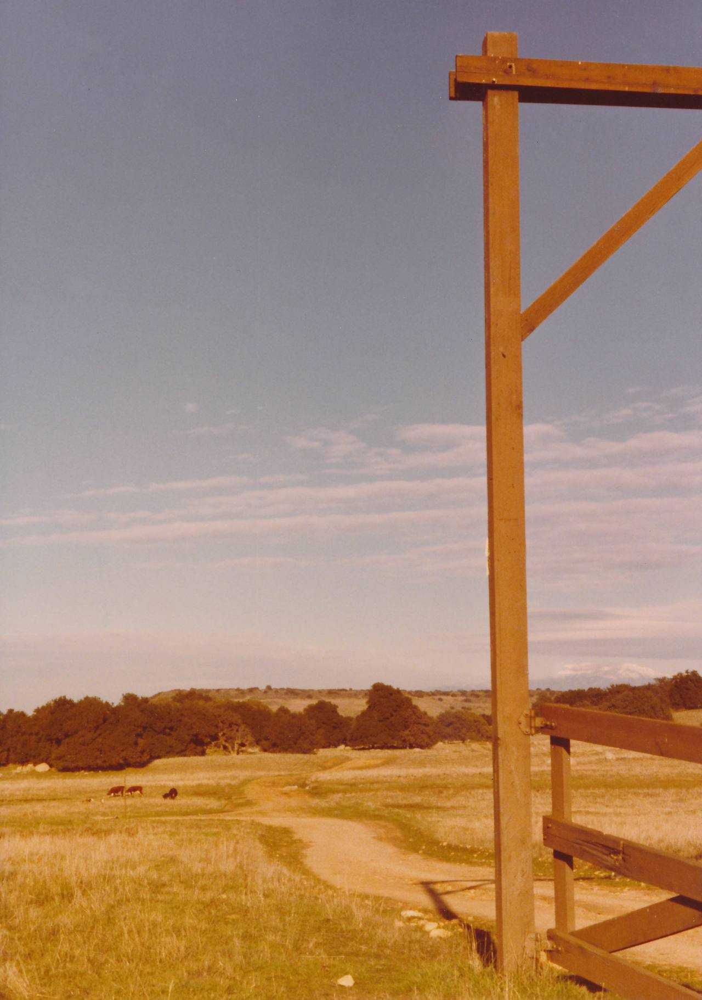
evidence/images/OCPL_OCStories_MissionViejoRanch_CattleCorralEntrance_CHAA018_id1691.jpg Corral entrance, Mission Viejo ranch, the kind of working node where a dip vat would have stood [A2]. Branding and a hand-dowsed ranch well are documented in the same 1971-72 OC Stories set (
OCPL_OCStories_MissionViejoRanch_branding_AliceChandler_ranchhand_1971_id1676.jpg,
OCPL_OCStories_MissionViejoRanchWell_AliceChandler_dowsed_1971_id1690.jpg).
Ranch-era history
- The footprint was O'Neill/RMV grazing land from 1882 to development; DTSC itself codes the one reviewed Ladera parcel's past use "AGRICULTURAL - LIVESTOCK" [A1, EnviroStor export].
- Orange County was named "heavily infested" in the USDA's founding tick survey and stayed under federal quarantine until March 1912 [A1, BAI Circ. 174; B2, SF Call 8 Mar 1912].
- Compulsory arsenical dipping (8 lb white arsenic / 500 gal, USDA formula) ran county-wide 1907-1912; four OC dip sites are named in the 1908 press, none inside Ladera, all on or beside the same rancho system [B2, LA Herald 27 May 1908].
- Pre-1950 aerials (1929/1931/1937-38/1946-47, best 1.15 ft/px) show the footprint as open cattle rangeland throughout; the only man-made feature resolvable inside Zone A is one structure on the Trabuco corridor ("node A", 1937) [A2, OC Survey imagery].
Dipping-evidence tier: HIGHLY PROBABLE (practice on the ranch system), UNKNOWN (footprint)
The O'Neill operation was the dominant herd inside a compulsory-dipping quarantine county, legal compliance implies dipping somewhere on the ranch system [inference, flagged]. Whether a vat stood inside the Ladera slice is unknown: no record names one; imagery shows none surviving 1929+; a ranch's dip typically sat at its central working corrals, which were not in this slice. Conditional mass estimate if one existed: ~0 or ~100-500 lb of arsenic at a single unlocated working area [MODEL ESTIMATE].
"Node A", demoted after re-examination (2026-07-22). The one built feature ever mapped inside the footprint (a 1948 USGS topo structure symbol on the Trabuco corridor) was re-examined at native 1937 resolution: the frame shows oak woodland and a clearing, no building geometry, no corral, no complex. A structure surveyed in 1948, 36 years after dipping ended and invisible in 1937, is weak evidence of a dipping-era working site. It remains in the record as a mapped feature, not a priority. The honest Ladera picture: imagery offers no compelling dip candidate anywhere in the footprint, the resolver here is documentary (RMV ranch books, county/state ledgers), not aerial.
Figures
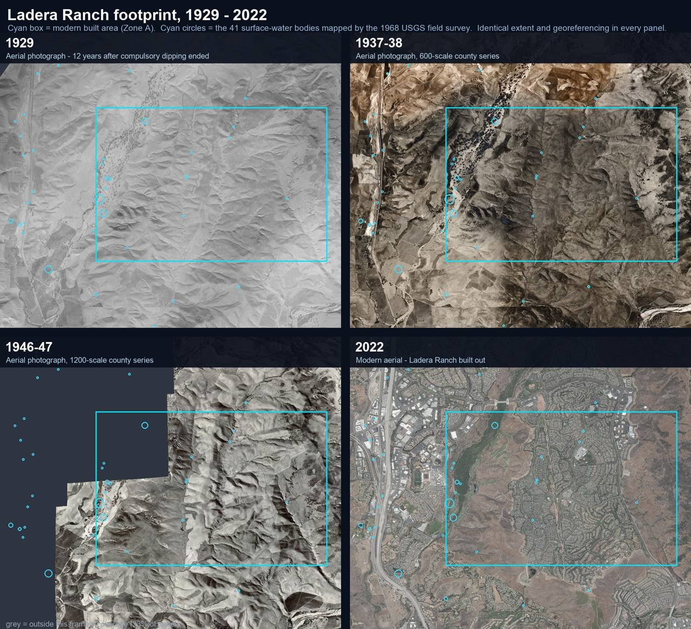
research/historical_imagery/11_timeseries_1929-2022_with_water.jpg, the footprint 1929→2022 with all 41 surveyed water bodies.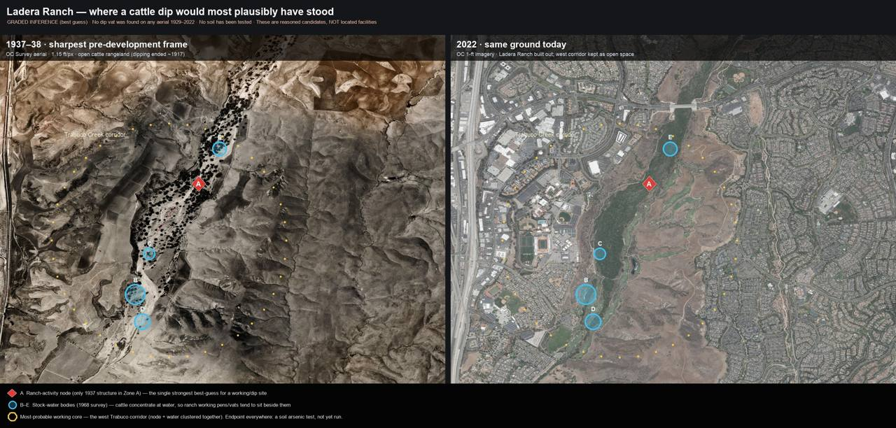
research/ladera/imagery/ladera_dip_bestguess_thennow.jpg, best-guess siting (graded inference): node A + stock waters over 1937-38 vs 2022.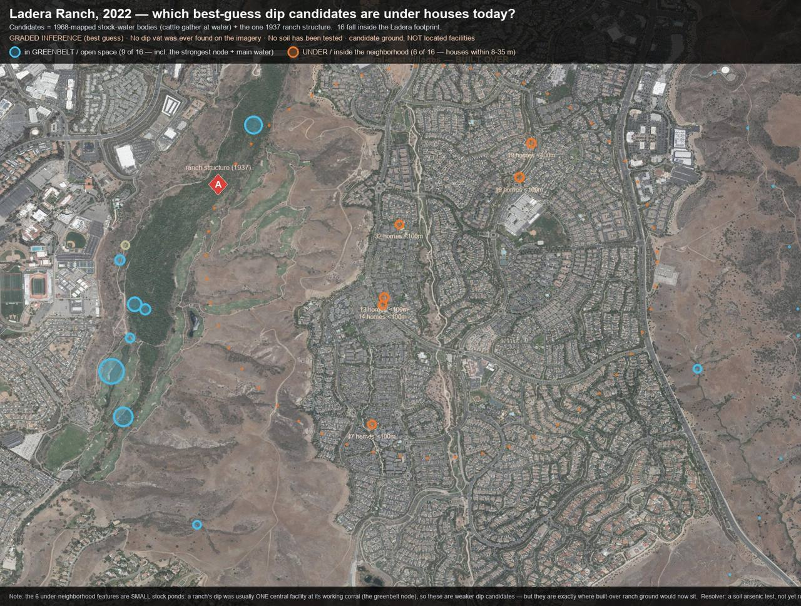
research/ladera/imagery/ladera_candidates_under_neighborhood.jpg, which candidate ground is greenbelt (9 of 16) vs under/beside homes (6 of 16; houses 8-35 m).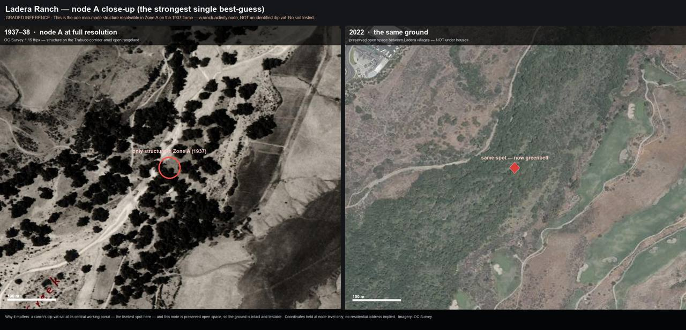
research/ladera/imagery/ladera_nodeA_zoom_thennow.jpg, node A at full resolution; now greenbelt.
Environmental review: what was actually done
| Field | Finding |
|---|---|
| What review exists | 1995 Michael Brandman Phase I ESA (Antonio Pkwy EIR App. H) [A2, cited in EIR 589 App. I]; 2003 Oso Grande School Phase 1 + Phase 1 Addendum (EnviroStor 30020004) [A2, read first-hand 2026-07-21] |
| Did anything sample soil? | NO. Both were Phase 1s, records review + visual walk, no sampling by definition. EnviroStor lists no sampling event of any kind; GeoTracker holds zero Ladera cleanup/investigation cases (2 routine gas-station tank permits only) [A2] |
| Analytes tested | None, nothing was ever analyzed in Ladera soil |
| Arsenic tested? | Never |
| Which arsenic signature | Not applicable, but the distinction matters for any future test: lead-arsenate (orchard pesticide → arsenic with lead) vs arsenic trioxide ("white arsenic," the cattle-dip poison → arsenic with little/no lead). Nearby school tests (Mission Viejo/Irvine) used the DTSC orchard protocol; no California test anywhere has targeted the dip signature |
| Verdict | NEVER TESTED, "No Action Required" (10/7/2003) rests on paper review alone |
Update, 2026-07-26: two large environmental reviews now full-text searched
Two documents previously held offline and marked "unread" have now been read in full, by programmatic full-text extraction against a fixed term list (arsenic in every form and spacing, cattle dip, dipping vat, tick eradication, quarantine, lead-arsenate, organochlorines, "EIR 555"), with every hit opened and read in context:
- 2016 RanchPlan Affordable Housing Final PEIR (SCH 2015051062), 1,737 pages [A2, full-text searched 2026-07-26]: zero mentions of arsenic trioxide, cattle dipping, tick eradication, or lead-arsenate.
- FEIR 589, Appendix I Phase I ESA (Planning Areas 1 to 9), 218 pages [A2, full-text searched 2026-07-26]: zero mentions of cattle dipping, tick eradication, or lead-arsenate. Its one genuine arsenic mention (page 119) is unrelated to Ladera and to dipping: groundwater above the drinking-water limit at a silica-sand mine tailings site in a different planning area (Planning Area 5), reported by a standard total-metals panel that was not speciated for arsenic trioxide, and outside the Ladera Ranch footprint.
Both documents are therefore consistent with, and do not contradict, the "never tested for arsenic trioxide" finding in the table above. Method note, for transparency: the PEIR's only "trioxide" matches were "sulfur trioxide," an unrelated air-quality term, counted as false positives once read; this project reads every hit in context rather than reporting raw keyword counts.
This narrows the gap; it does not close it. The Ladera master entitlement EIR itself (referenced in
county records as EIR 555, roughly 1997) has still not been located as a document this project
holds [unlocated]. The 1995 "Ladera Planned Community Program Text" on file is a scanned image PDF with
no extractable text (no OCR toolchain was available this pass, so it is a disclosed limitation, not a
null result), and by its title is likely the zoning ordinance rather than the EIR. Case 94IC011
(pre-digital), the TTM 17325 laboratory appendices, and the physical archives listed later remain
unread [unlocated / unread]. Full method and results: research/land_use/ARSENIC_FULLTEXT_SEARCH_2026-07-26.md.
A four-page plain-language summary of how this was checked is a citable download:
How we know: the Ladera arsenic-trioxide testing question (PDF).
Schools: 10 verified in Ladera Ranch (roster: research/schools/AREA_SCHOOL_ROSTERS.md)
CUSD public (4): Chaparral ES (2001) · Ladera Ranch ES (2003) · Ladera Ranch MS (2003) · Oso Grande ES (2005), the ONLY school with any EnviroStor entry, and that entry is the paper-only Phase 1 above. Private/preschool (5) + 1 former campus (Stoneybrooke Christian, 2003-2015). Every school except Oso Grande: no EnviroStor school-investigation entry located (absence of entry ≠ clearance; EnviroStor per-school checks were bot-gated to automated search, flagged for interactive verification).
What would locate a vat here, and where to test
Because imagery is exhausted, the Ladera answer is now documentary + a spade: - Archives to pull, the RMV/O'Neill ranch books, foreman logs, dipping receipts, and ranch photo albums (Sherman Library first; then UCI Special Collections, San Juan Capistrano Historical Society, the private RMV archive). See Chapter "What we're looking for." - Where to test, screening samples in the preserved Trabuco greenbelt and the neighborhood parks and common areas (the child-contact 0-6 in horizon), plus any volunteered yard soil; total + bioavailable arsenic, with lead alongside to separate dip- from orchard-signature, plus speciation. Grading likely diluted any residue, so a null is not a full clearance and a hit is significant.
Honest limits & counter-evidence
- No vat found on adequate imagery (1.15 ft/px would resolve a corral unmistakably), weak evidence against a surviving surface facility; says nothing about one demolished ~1917.
- Homes are NOT preferentially sited on ranch-era water (enrichment 0.97×, p = 0.51), the "developers built on the cattle grounds" mechanism is rejected; near-total development means any ranch-era residue would sit under or beside housing regardless.
- The reported pediatric-cancer pattern may be explained by population structure, diagnostic or referral patterns, or chance; the available evidence does not establish causation, and this report does not claim otherwise.
- Resolver: a direct soil arsenic (+ lead, + speciation) test at the greenbelt node/corridor, never performed.
Schools: the roster, and what the borings actually tested for
Schools matter most here: they concentrate the sensitive receptor (children), they sit on the same former ranch land, and, under California's 2000 school-siting law, they are the one land use that triggers a mandatory environmental look. So what that look tested for is the whole question. The headline: where school soil was sampled at all, the analytes were chosen for orchards and landfills, never for the cattle-dip signature. Arsenic trioxide, the poison used in dipping, has never been an analytical target at any school in these communities.
What the borings tested for: and what they didn't
| Site (area) | Review / borings | Analytes actually tested | Arsenic tested? | Which signature |
|---|---|---|---|---|
| Oso Grande ES, Ladera Ranch | Phase 1 + Phase 1 Addendum (2003), records + walk, no soil borings [A2] | None, no soil sampled | No | - |
| Ladera Ranch ES / MS, Chaparral ES, Ladera | No DTSC school-investigation soil study located [A2] | None located | No | - |
| Carl Hankey ES, Mission Viejo / Ladera edge (former orchard + row crops) | EnviroStor school investigation, soil sampled, No Further Action [A1] | Arsenic · Lead · Methane | Yes | Lead-arsenate (orchard), arsenic read with lead, as crop-pesticide residue. NOT the low-lead dip signature |
| TTM 17325, Coto de Caza (adjacent tract, former shooting range) | Phase II + Remedial Action Plan (2011) [A2] | Lead · PAH (clay-target debris) | No | (metals suite did not target arsenic) |
Read this table carefully. Only one nearby school (Carl Hankey) ever had soil tested for arsenic and that was because it sat on a former orchard, so the investigation looked for lead-arsenate (arsenic bound with lead, the orchard pesticide). A cattle dip leaves the opposite chemical fingerprint: arsenic trioxide, arsenic with little or no lead. No school study has ever tested for that. The dip signature has never been ruled in or out anywhere in these communities. That is the single most important, and most fixable, gap in the record.
Ladera Ranch: 10 schools (verified roster)
| School | Operator | Grades | Opened | EnviroStor |
|---|---|---|---|---|
| Chaparral Elementary | Capistrano USD | TK-5 | 2001 (first Ladera school) | none located |
| Ladera Ranch Elementary | Capistrano USD | TK-5 | 2003 | none located |
| Ladera Ranch Middle | Capistrano USD | 6-8 | 2003 | none located |
| Oso Grande Elementary | Capistrano USD | PK-5 | 2005 | ID 30020004, Phase 1, paper-only |
| Montessori of Ladera Ranch | Private | PK-2 | - | none located |
| The Goddard School | Private | Infant-PK | - | none located |
| Ladera Ranch KinderCare | Private | Infant-PK | - | none located |
| Pacific Preschool | Private | PS-K | - | none located |
| Discovery Montessori | Private | Preschool | - | none located |
| Stoneybrooke Christian (Ladera campus, closed 2015) | Private | Elem+JH | 2003 | none located |
Coto de Caza / Trabuco / Dove Canyon / Wagon Wheel: 5 schools
| School | Operator | Grades | Opened | EnviroStor |
|---|---|---|---|---|
| Wagon Wheel Elementary (Wagon Wheel village, west of the Joplin patent ground) | Capistrano USD | K-5 | 1997 | none located |
| Trabuco Elementary (Trabuco Canyon) | Saddleback Valley USD | TK-6 | 1980 site | none located |
| Robinson Elementary (Robinson Ranch) | Saddleback Valley USD | TK-6 | 1994 | none located |
| Portola Hills Elementary | Saddleback Valley USD | K-6 | 1992 | none located |
| Dove Canyon Montessori | Private | Infant-3 | - | none located |
No school exists inside the Coto de Caza gates; Coto children attend the schools above plus Tijeras
Creek ES / Arroyo Vista TK-8 / Tesoro HS in neighboring Rancho Santa Margarita. Full rosters for
Rancho Santa Margarita (15), Las Flores (2), Newport Coast (2), and Eastbluff/Santa Ana Heights (6)
are in research/schools/AREA_SCHOOL_ROSTERS.md.
The one honest caveat on "none located"
"None located" is not a clean bill of health, it means no DTSC school-investigation soil study was found in the public record, and EnviroStor's per-school pages were bot-gated to automated search on the compile date (a data gap flagged for interactive verification). For most of these schools, no mandatory soil look was ever triggered at all. Absence of an entry means the question was never opened, not that it was answered.
Bell Canyon / Coto de Caza: the documented dip ranch
Summary. This is the one place in California where this investigation can name an arsenical cattle dip from the primary record: the county-ordered 1908 dipping "at the ranch of J. C. Joplin in Trabuco canyon" [B2, LA Herald 27 May 1908], an event potent enough that six cattle from Joplin's herd died of the government arsenic preparation weeks later [B2, SJ Mercury 26 Jun 1908]. The ranch is now located to the survey section: Josiah C. Joplin's 1909 homestead patent covers T6S R7W SBM Sections 24-25, ground that today straddles northeastern Coto de Caza (west half: homes, golf, a reservoir) and open foothill, with the family's Bell Canyon ranchstead (1938: buildings, orchard, fenced fields) just east on ground that remains undeveloped open canyon.
The documented chain (all primary press, read first-hand)
| Date (1908) | Event | Source [B2] |
|---|---|---|
| Jan | Stockmen's meeting at San Juan Capistrano on the tick | Blade Tribune 18 Jan |
| 27 May | County-ordered dipping: "several hundred head… at the ranch of J. C. Joplin in Trabuco canyon"; 600-700 at Capistrano; Yorba; Bixby/Santa Ana Canyon | LA Herald |
| 26 Jun | Six cattle die after dipping in "the arsenic preparation recommended by the Government" | SJ Mercury |
| 25 Jul | E. J. Levengood files $400 claim vs County of Orange; dipping "by order of the county veterinarian, Dr. W. S. McFarlane" | LA Herald |
| 11 Aug | The dead herd "was driven from J. C. Joplin's ranch in Bell Canyon," bought from Joplin | SP Daily News |
| Mar 1912 | Orange County released from federal quarantine, the era ends | SF Call 8 Mar; Visalia T-D 15 Mar |
The people, fixed: Joplin = Josiah C. Joplin (1844-1933), Bell Canyon homesteader, 4+-term county treasurer, obituary La Habra Star 23 Jun 1933 [B1/B2, Armor 1921 + press]. Levengood = E. J. Levengood of Santa Ana, the chariot-racing horseman, later of Pomona [B2]. McFarlane = the county Veterinary Surgeon & Stock Inspector, in office Oct 1907-Mar 1909 [B1, Armor roster].
The ground, located
- Patent: BLM GLO Accession SER-96513 (16 Dec 1909): NE¼SE¼ + Lot 5 SE¼SE¼ of Sec 24, Lot 1 NE¼NE¼ of Sec 25, T6S R7W SBM [A2]. BLM CadNSDI polygons place it at the NE edge of the built Coto community [A2].
- The ranchstead: the 1938 600-scale aerial shows the working home place, structure cluster, orchard grid, fenced fields, in Bell Canyon just east of the patent line (on the family's later railroad-section purchases), persisting in 1953; today still open canyon with a small rural compound consistent with the Starr Ranch Sanctuary facility area [A2 imagery; ownership identification pending parcel check].
- Corrected, both ways: the earlier "preserved, not built over" headline was too generous, part of the patented range is under homes; and "under Coto" alone would be too grim, the dip-likeliest ground (the home corrals) is apparently not built over. Precision replaced both.
Dipping-evidence tier: DOCUMENTED (the only one in this report)
Arsenical, county-ordered, lethal to stock, on named ground, the reference case for the whole statewide question.
The ranch, in pictures
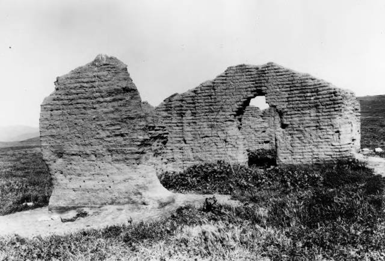
evidence/images/OCPL_OCArchives_TrabucoAdobeRuins_ONeillPark_dateUnknown_id1508.jpg Trabuco adobe ruins, O'Neill Park, the O'Neill ranch fabric that surrounded the Joplin inholding [A2, OC Archives].
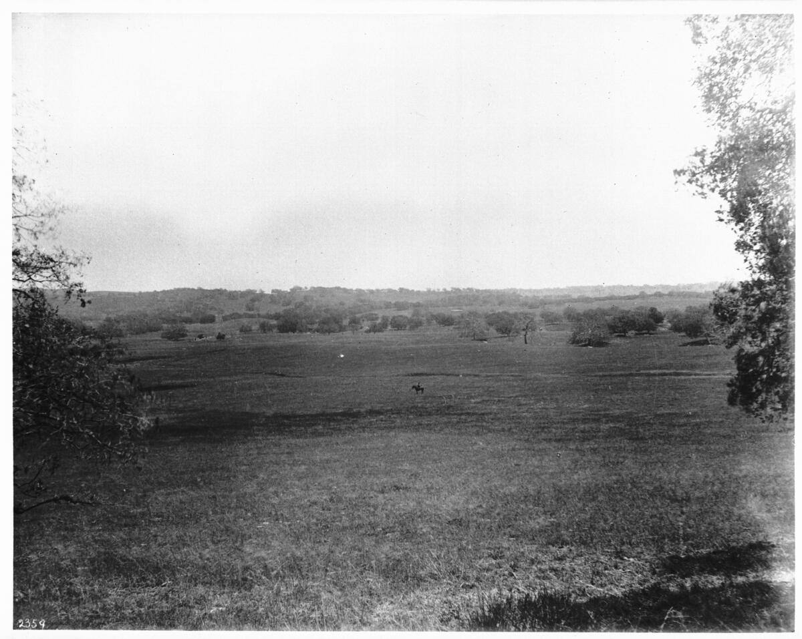
evidence/images/usc_chs2359_UC139832_lone_mounted_cowboy_santa_margarita_ranch_sd_county_1900.jpg A vaquero on the O'Neill range, c. 1900 [A2, USC CHS], the working world into which the county veterinarian's 1908 dip order arrived.
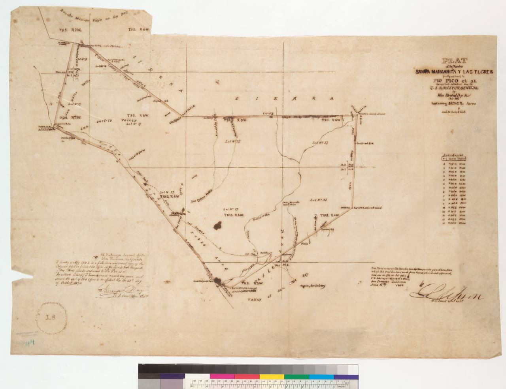
evidence/images/Bancroft_LandCaseMapE-1362A_1867_Plat_RanchoSantaMargaritaYLasFlores_Strobel.jpg The 1867 land-case plat of the rancho [A2, Bancroft], the survey framework Joplin's 1909 homestead patent (Sec 24/25) was later carved from.
Figures
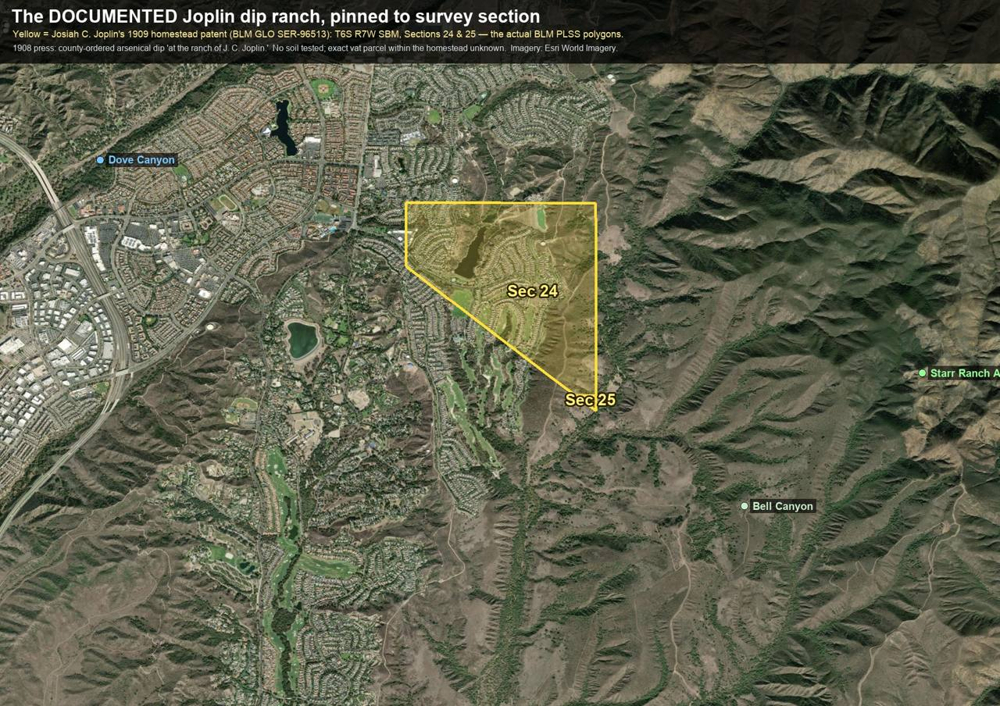
research/coto_de_caza/joplin_patent_section_overlay.jpg, the patent polygons on today's imagery.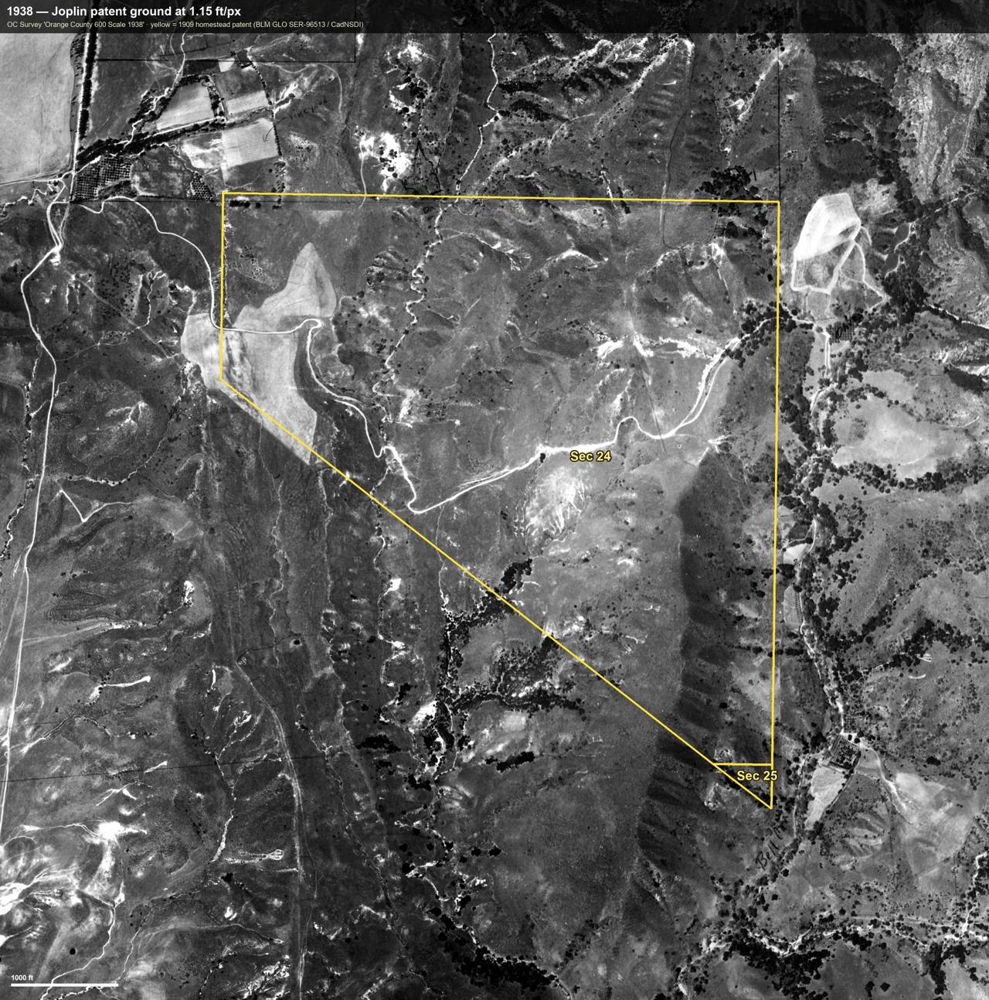
research/coto_de_caza/imagery/joplin_patent_1938_annotated.jpg (+ 1953, modern, triptych), the patent ground across eras; "Bell Cr." in the county cartographer's own ink.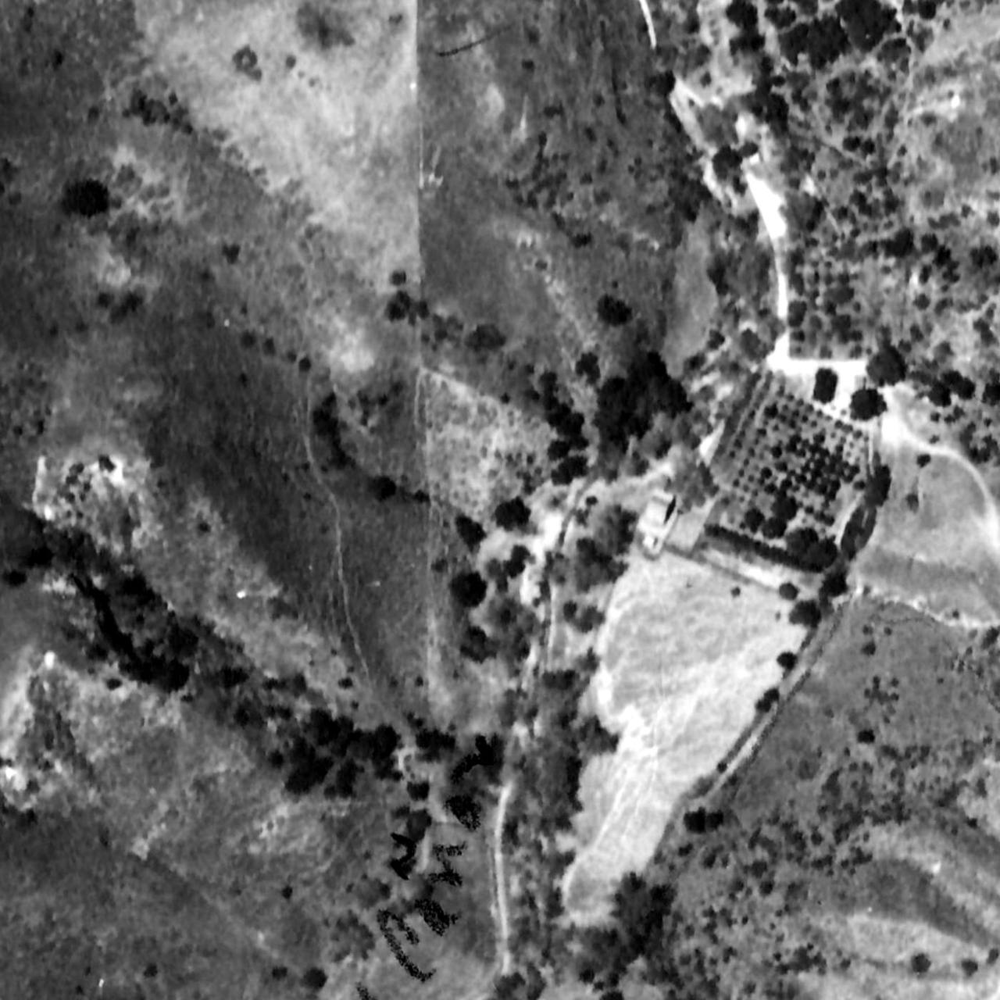
research/coto_de_caza/imagery/joplin_z3_bellcanyon_east_1938.jpg (+1953/modern), the ranchstead: orchard, buildings, fields → today's undeveloped compound.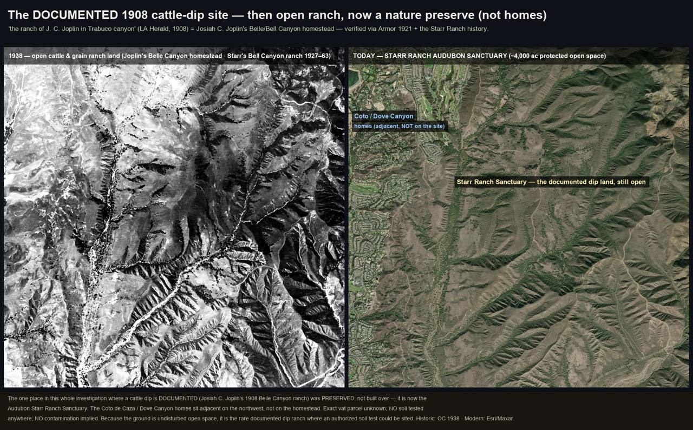
research/coto_de_caza/joplin_dip_site_then_and_now.jpg, wide then/now context.
Environmental review: what was actually done in Coto
| Field | Finding |
|---|---|
| What review exists | 94IC011 "Coto de Caza Ltd, various locations within golf course and residential tracts," OC LOP cleanup case, closed 10/8/1998 (contaminants unspecified online; file pre-digital) [A2]. 11IC014 / TTM 17325 (Van Gogh Way & Oak Canyon): Phase I (Aug 2011) → Phase II → ESA + Remedial Action Plan (Nov 2011), closed 4/27/2015 [A2, read page-by-page] |
| Did anything sample soil? | YES, once, for a different hazard. The TTM 17325 Phase II sampled the tract's former shotgun range |
| Analytes tested | Lead + PAH (clay-target debris): BaP to 13,000 µg/kg; one lead "nugget" at 125,000 mg/kg; background clean. RAP buried impacted soil on-site beneath roads/fill [A2] |
| Arsenic tested? | Not in the pages read (lab appendices unconfirmed). No arsenic result exists anywhere in the dip district |
| Which arsenic signature | The one soil campaign targeted shooting-range lead/PAH, neither lead-arsenate (orchard) nor arsenic trioxide (the dip poison) has ever been analyzed here |
| Verdict | TESTED FOR THE WRONG SOURCE. When a hazard was documented (the gun range), the machinery worked, Phase II, RAP, supervised closure. The 1908 dip was never in any database, so the same machinery never engaged. That asymmetry, on one property, is the report's thesis in miniature |
Schools: verified roster (research/schools/AREA_SCHOOL_ROSTERS.md)
No school exists inside the Coto de Caza gates. The area's five verified schools sit in the surrounding communities: Wagon Wheel ES (1997, Wagon Wheel, directly west of the Joplin patent ground) · Trabuco ES (Trabuco Canyon) · Robinson ES (1994, Robinson Ranch) · Portola Hills ES (1992) · Dove Canyon Montessori. (Tijeras Creek ES verified to be in Rancho Santa Margarita, not Dove Canyon.) None has an EnviroStor school-investigation entry located [absence of entry ≠ clearance; per-school EnviroStor checks pending interactive verification].
Honest limits & counter-evidence
- The exact vat parcel is unknown, "at the ranch of" spans ~766 acres; the home-corral inference is a siting heuristic, not a record.
- No soil has been tested for dipping-era arsenic anywhere in the district; nothing here asserts contamination of any parcel, school, or home.
- The 1908 cattle deaths document acute fluid toxicity in 1908, not soil residue today.
- Resolver: an authorized soil arsenic + lead + speciation transect at the undisturbed ranchstead ground (landowner permission required), the cleanest test the whole investigation offers.
30 · Newport Coast
Newport Coast occupies the coastal slopes of the former Rancho San Joaquin, absorbed into the Irvine Ranch in 1864 and grazed by cattle for roughly a century before mass grading began in the late 1980s. The land sits in Orange County, a "heavily infested" county under the 1907-1912 compulsory arsenical-dipping program, and inside the March 1912 last-held quarantine district, whose boundary began "at the Pacific Ocean in the town of Newport Beach." No located record ties a dip vat or dipping event to this land by name, and no environmental review of the area has ever addressed ranch-era arsenical residue. No contamination is asserted; the open question is that the review record never looked.
History
- Rancho San Joaquin (Sepúlveda grant, 1837/42) → Irvine Ranch (James Irvine, 1864) → Irvine Company. [B2, corroborated secondary histories]
- Cattle-grazed for about a century. A California Coastal Commission staff report states the inland slopes "were extensively used for cattle grazing," with brush cleared to expand grassland; grazing continued until ~1979. [A2, read directly]
- Inside the quarantine geography at its most persistent. Orange County was among the last four counties under the federal cattle-tick quarantine (1 Apr 1910) [B1, Pulling 1965]; the Governor's proclamation of 7 March 1912 held the district beginning at Newport Beach, the Newport coast strip, under quarantine to ~June 1912. [A2, proclamation read at source]
- Mass-graded on an exceptional scale. The final development phase alone (~980 ac) moved ~22M cy of cut, ~25M cy of fill, and ~13M cy of remedial earthwork, filling headland streams. [A2, read directly]
Dipping evidence tier
HIGHLY PROBABLE (ranch-scale inference, Irvine Ranch, tier row 6). A heavily infested quarantine county plus one of California's largest cattle operations under a compulsory arsenical-dip law makes dipping somewhere on the ranch highly probable, but no located record names a vat on this land, and the documented use here is extensive grazing, not stock handling. The tier describes the probability of the practice, not residue or contamination.
Figures
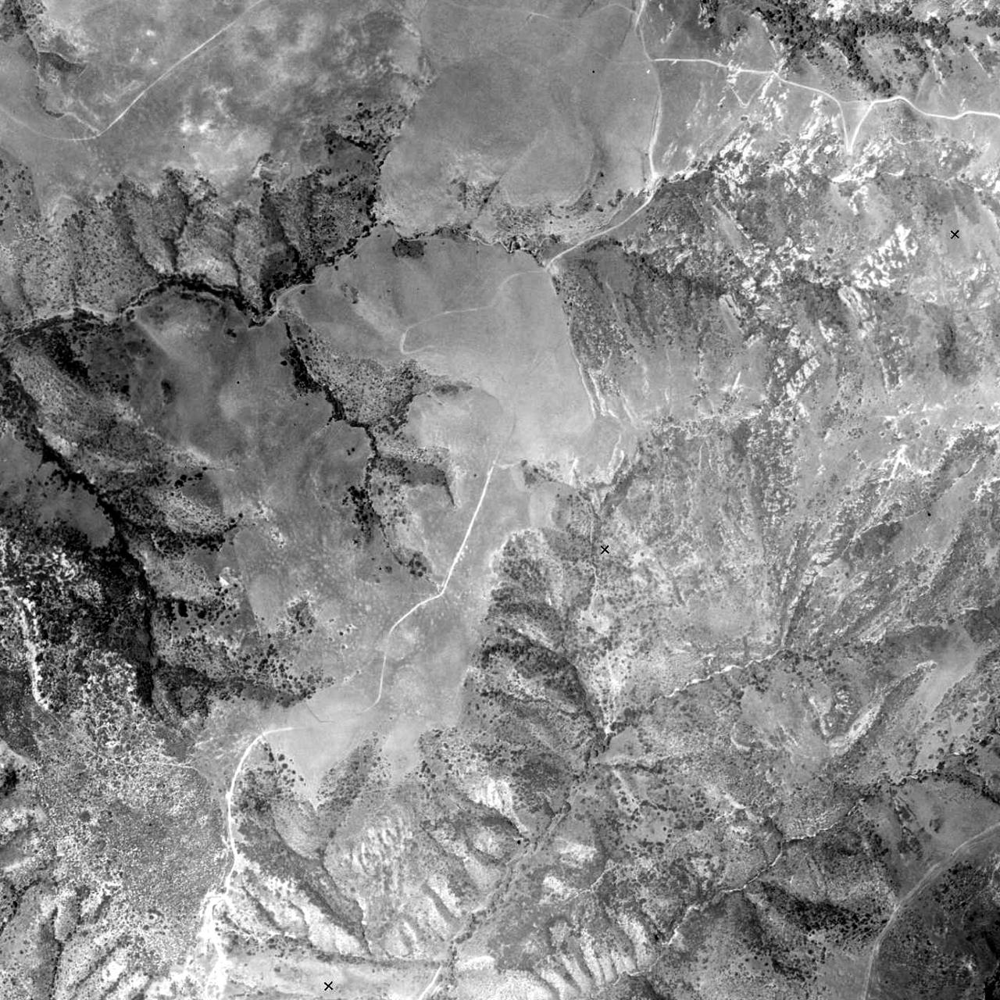
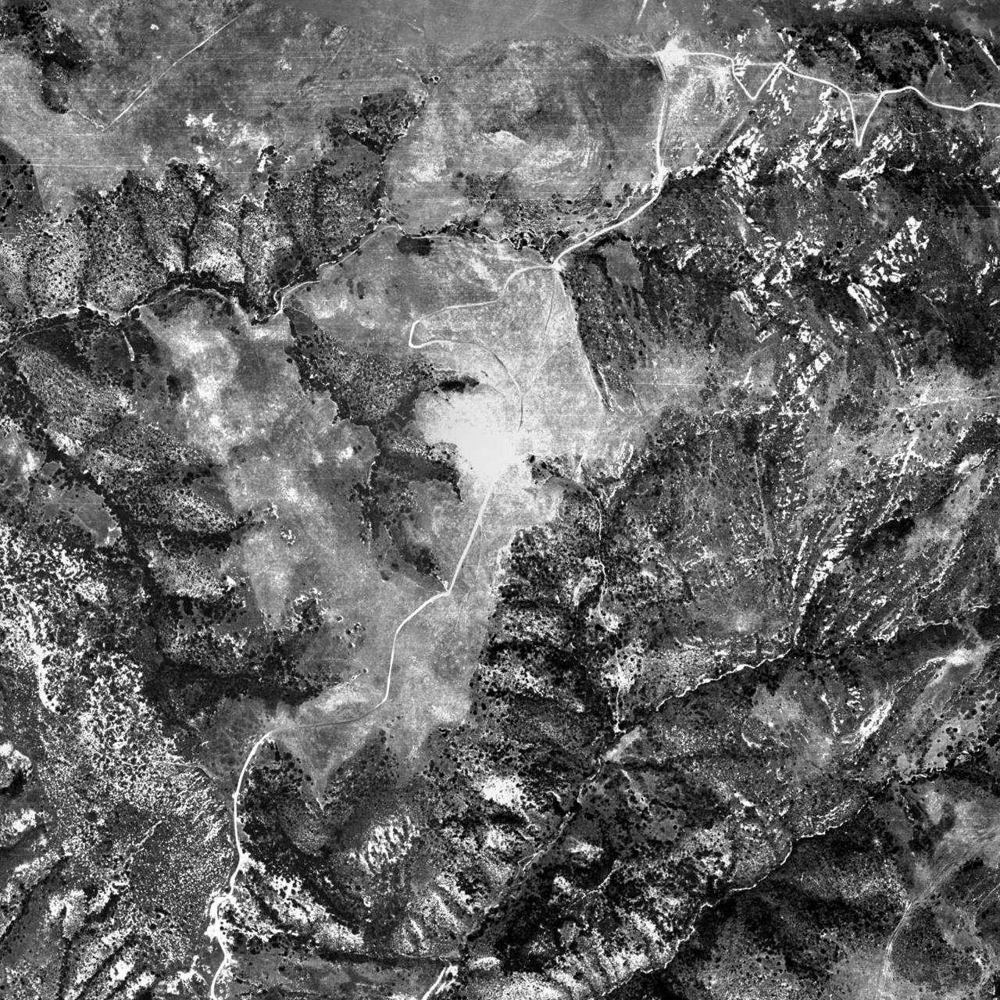
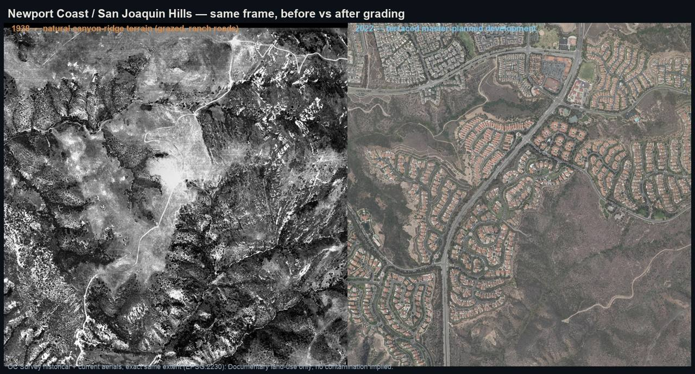
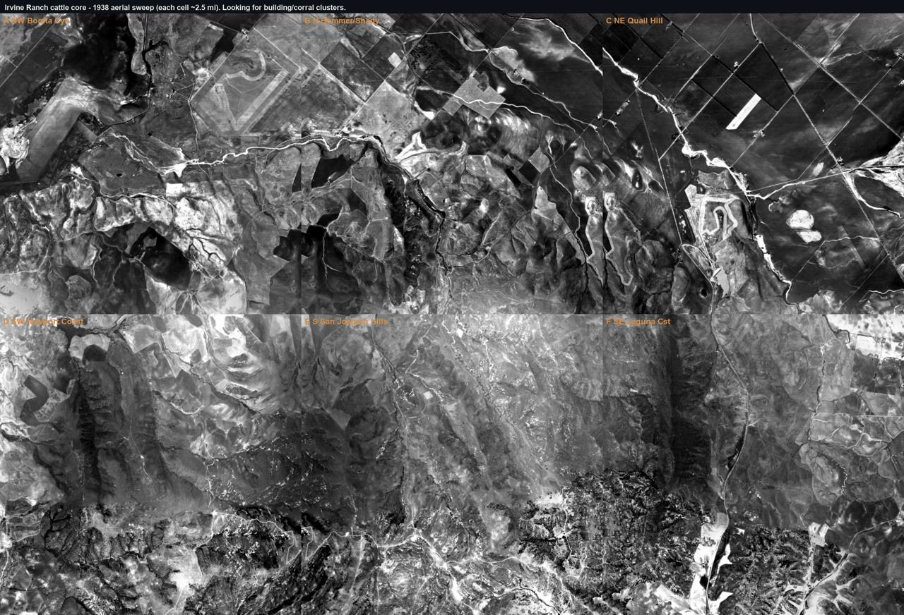
Environmental review
| Field | Finding |
|---|---|
| What review exists | Extensive CEQA / Coastal Commission review (Newport Coast LCP; Pelican Hill; Crystal Cove): biology, hydrology, grading, views, archaeology. Full-text scan of the 273-pp Coastal staff report: zero substantive hits for arsenic, lead-arsenate, cattle dip/vat, or Phase I ESA. [A2] |
| Sampled soil? | No sampling located for any ranch-era chemical question. EnviroStor + GeoTracker (live REST query, A1) show no arsenic or ag-residue case in the Newport Coast core; registered sites are a closed MSW landfill (Coyote Canyon), dry cleaners, and aerospace. |
| Analytes tested | Nearest agricultural-past-use record (Turtle Ridge Elementary, DTSC): methane, not arsenic. [A1] |
| Arsenic tested? | NO, in no located review, in any context. |
| Which arsenic signature | Neither. Not the lead-arsenate orchard signature (As with Pb), not the arsenic-trioxide dip signature (As with little/no Pb). No California test anywhere has targeted the dip signature. |
| Verdict | Never-tested. (Caveat: CEQAnet holds abstracts, not full EIR appendices; an unretrieved soils appendix could exist. "Searchable materials do not appear to address arsenical residue", not "never studied.") |
Honest limits & counter-evidence
- No dipping record names this land. The four named 1908 OC dip sites are all eastern/southern county; none is on Irvine/San Joaquin coastal land. Absence of record ≠ absence of fact, but the positive record simply is not here. [B2 + absence]
- Counter-considerations: SoCal tick infestation was framed as a Baja-border phenomenon; California scabies dipping often used lime-sulfur, not arsenic; the rancher-built features noted in the Coastal record are cattle watering ponds, expected on any grazed range, not a dipping indicator. [B1/A2]
- Grading cuts both ways. ~60M+ cy of earthwork rearranged any shallow historic surface, evidence of neither presence nor absence; a surviving intact near-surface signal cannot be assumed.
- The look-back gap is one of analysis, not data. The 1896 topo and 1927+ aerials exist; no review ever used them for this question. A verified dead-end: a web result tying GeoTracker site SL0608756247 to "Newport Coast" is actually Olin Corp., Morgan Hill, not this area.
This platform is an independent research and data-organization project. It does not provide medical advice and does not establish that any pesticide, property, organization, employer, school, water provider, government agency, or other party caused any illness. Publicly reported health events may not have been independently medically verified. Geographic and temporal overlap does not establish exposure or causation. Formal conclusions require authorized epidemiological analysis, verified medical information, exposure assessment, toxicological review, and independent scientific evaluation.
40 · Irvine
Irvine sits on the core of the Irvine Ranch, Rancho San Joaquin (≈50,000 ac, acquired 1864) plus Rancho Lomas de Santiago (≈47,000 ac, 1866), one of the largest livestock operations in California, with a named southern cattle headquarters at Bommer Canyon that worked from the 1870s to about 1970. Irvine has the strongest cattle-operations profile of the coastal study areas, yet no located record names a dip vat anywhere on the ranch, and where arsenic does appear in Irvine soils it co-occurs with orchard pesticides, not grazing. The prime candidate ground, the preserved, undeveloped Bommer Canyon camp, is precisely the parcel that never triggered a modern subsurface investigation. No contamination is asserted.
History
- The ranch: Rancho San Joaquin + Rancho Lomas de Santiago assembled by James Irvine from 1864; large sheep flocks from 1868, then decades of cattle. [B1/B2]
- Bommer Canyon Cattle Camp was the ranch's southern cattle headquarters (~1870s-1970): spring roundups, "processing," corrals, loading ramps, holding pens; buildings and equipment survive. [B1, Irvine Ranch Conservancy]
- Orange County was a heavily infested quarantine county under the compulsory 1907 arsenical-dip law (USDA Circular 174 tiering). [A1/B1]
- The definitive ranch history is silent. Cleland, The Irvine Ranch of Orange County (1952), contains no "dipping / vat / quarantine / scab / tick fever", a meaningful absence in the one source most likely to mention it; USDA BAI annual reports 1905-1911 (full-OCR grep) never mention Irvine. [B1 / A1]
Dipping evidence tier
HIGHLY PROBABLE (inference). Huge cattle operation + heavy quarantine county + compulsory arsenical dipping → the practice almost certainly occurred somewhere on the ranch. No vat is located, and central Irvine sat on (possibly outside) the NW edge of the last-held March 1912 quarantine district, the exact 1912 road alignment is not georeferenced. The tier ranks the probability of the practice only.
Figures
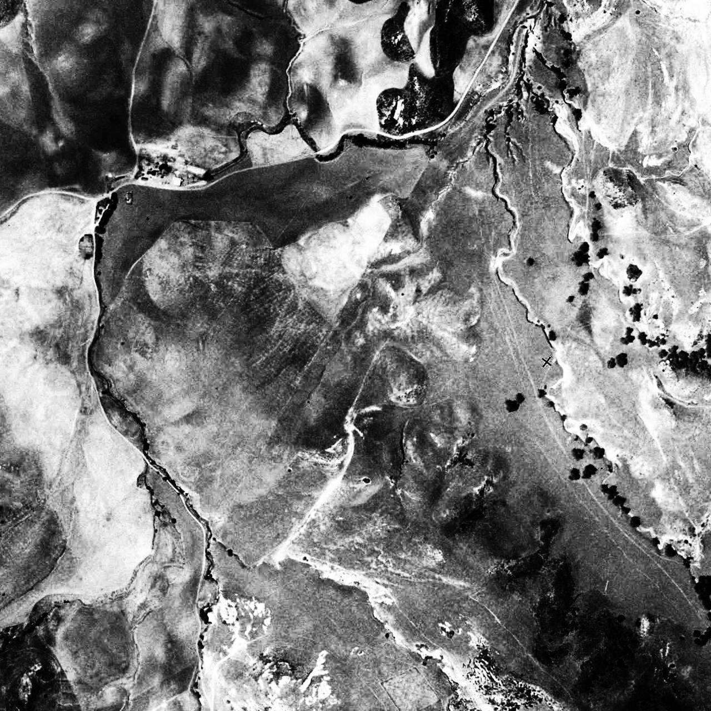
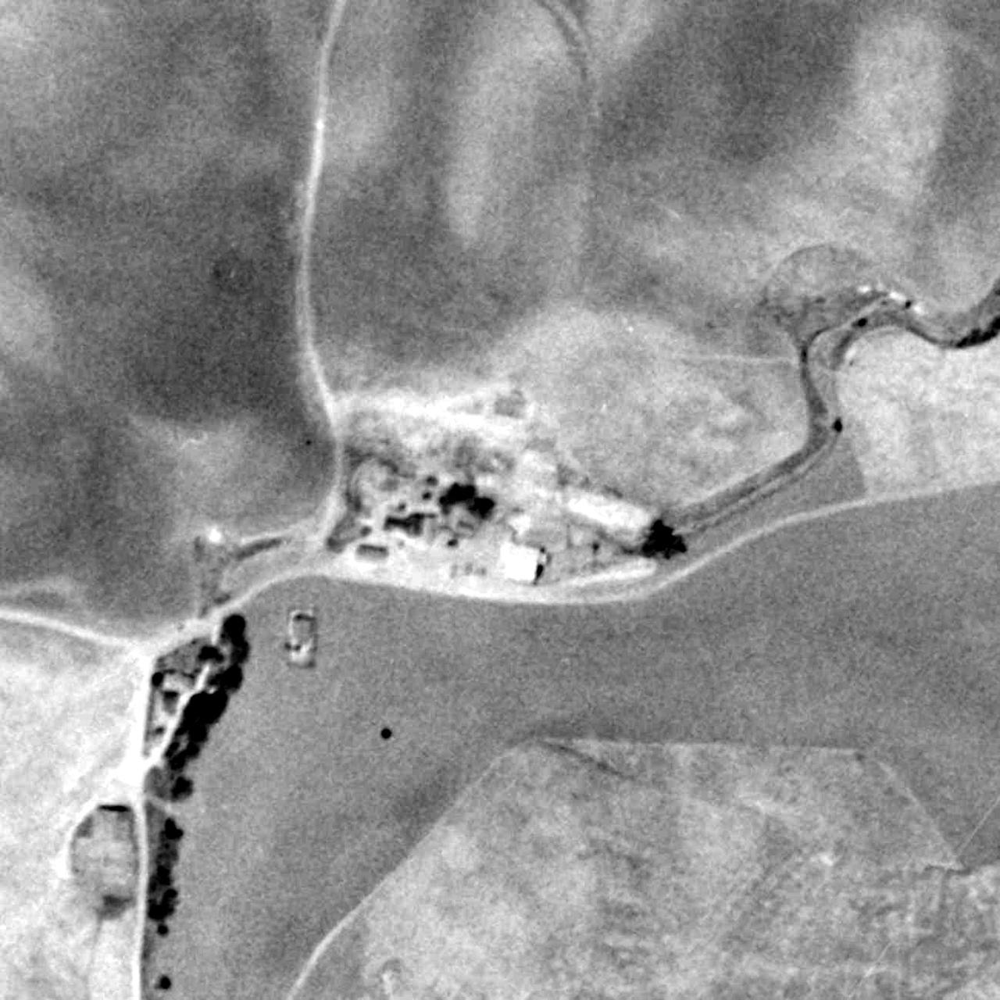
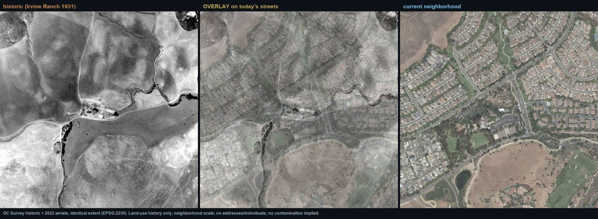
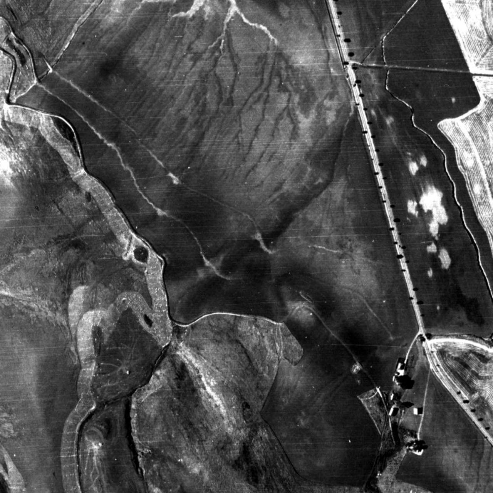
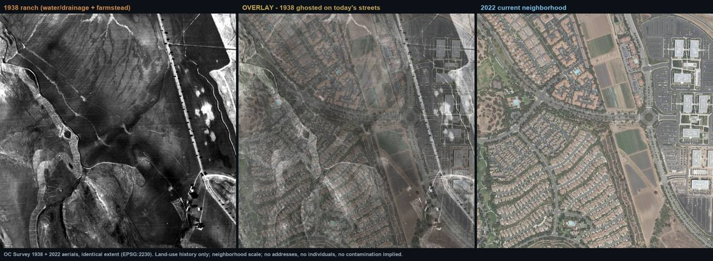
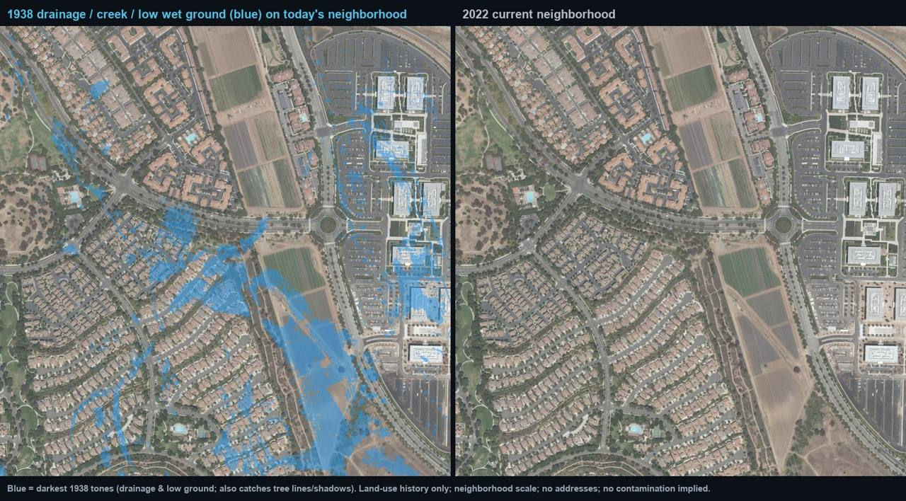
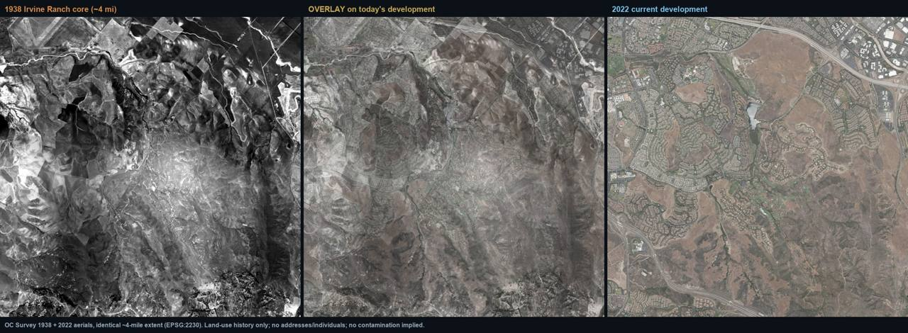
Imagery discipline: no dip vat is identifiable in any frame, a ~30-60 ft trough is at or below resolution. The 1931 complex first labeled "Bommer HQ" is a developed ranch node of unconfirmed identity ~0.7 mi NW of the preserved camp; its name remains open pending ranch maps (Sherman/UCI).
Environmental review
| Field | Finding |
|---|---|
| What review exists | 66 EnviroStor + 379 GeoTracker records in Irvine; DTSC school-site investigations across former ranch land; CEQA reviews with a 1938 aerial floor (e.g., Gateway Village EIR cultural review: aerials 1938→; topos 1935→). A statewide EnviroStor search for "DIP VAT"/"DIPPING" returns 0, the only animal-dip comparator anywhere is the Presidio "Former Horse Dip Area," proving DTSC registers such sites when documented. [A1, live REST] |
| Sampled soil? | Yes, on former orchard/row-crop parcels (DTSC school investigations: Woodbridge HS, Woodbury, Orchard Hills, others). No, at the undeveloped Bommer Canyon camp, which never triggered a Phase I or drilling. [A1] |
| Analytes tested | Orchard parcels: organochlorine pesticides (DDT/chlordane) + arsenic + lead per DTSC ag guidance. Grazing-only parcels (Turtle Ridge; comparators Laguna Niguel Elem., San Juan Hills HS): clean / methane only. [A1] |
| Arsenic tested? | YES, but only in the orchard context (former farmed parcels). |
| Which arsenic signature | Lead-arsenate (As WITH Pb + OCP suite), the orchard signature. The dip signature (high localized As with little/no Pb) has never been targeted; aggregate databases cannot resolve it. |
| Verdict | Tested-for-the-wrong-source on farmed land; never-tested at the prime cattle-handling candidate (Bommer Canyon). |
Honest limits & counter-evidence
- The strongest counter-evidence in the project: in south OC, arsenic tracks with orchards and row crops, not with grazing, pure former-grazing parcels repeatedly test clean (including Oso Grande in Ladera Ranch: livestock past-use, "No Contaminants found"). [A1]
- Two caveats keep the question open: (a) a dip vat's fingerprint is distinguishable from orchard residue but the databases don't resolve it; (b) the very place a vat would most plausibly stand, the preserved cattle camp, has had the least investigation. Absence of record ≠ absence of fact.
- No dipping record names Irvine anywhere: not CDNC (exhaustive), not USDA BAI reports, not Cleland 1952. The named 1908 OC dipping is all eastern/southern county. [B2/A1/B1]
- The cattle camp operated to ~1970, so a durable corral/vat complex would appear on 1927-1970 aerials; the targeted aerial screen found ranch complexes but nothing dip-diagnostic. Confirmation requires higher-resolution frames + ranch maps + records work.
This platform is an independent research and data-organization project. It does not provide medical advice and does not establish that any pesticide, property, organization, employer, school, water provider, government agency, or other party caused any illness. Publicly reported health events may not have been independently medically verified. Geographic and temporal overlap does not establish exposure or causation. Formal conclusions require authorized epidemiological analysis, verified medical information, exposure assessment, toxicological review, and independent scientific evaluation.
50 · Upper Newport Bay: Eastbluff · The Bluffs · Big Canyon · Santa Ana Heights
Four neighborhoods ring Upper Newport Bay ("Back Bay") on former Rancho San Joaquin / Irvine Ranch land, at the coastal anchor of the March 1912 last-held quarantine district, the proclamation's boundary begins "at the Pacific Ocean in the town of Newport Beach." In the dipping window (1907-1912) all four read as open Irvine Ranch mesa and canyon land, grazing and/or dry-farmed beans and grain, with no cattle-handling infrastructure visible in the earliest maps or aerials and no dipping record located for any of them by name. Their modern environmental record is entirely post-1960 industrial. No contamination is asserted.
History
- Land: Rancho San Joaquin → Irvine Ranch (James Irvine → Irvine Company); the 1901 USGS topo prints "SAN JOAQUIN" across the uplands east of the bay, open ranch land, no town, no labeled ranch headquarters or corral. [A1]
- Use in the window: OC Parks states "the hills above the bay were used to graze cattle and sheep" (undated, general) [A2]; the ranch was converting the mesas to dry-farmed lima beans and grain in exactly this period, so 1907-1912 use per parcel is range or cropland, plausible but unrecorded. [B1/B2]
- Quarantine placement: all four sit south of the T6S north line, inside the 7 March 1912 last-held district, at its Newport Beach anchor. [A2, proclamation read at source]
- Development came decades later: Eastbluff and the Bluffs mid/late 1960s (the Bluffs confirmed by Albright 1965 [A1]); Big Canyon golf 1968-71; Santa Ana Heights' small-farm/equestrian character is a mid-20th-century development (median home ~1980; <1% pre-1940), the cultivated fields visible in 1938 postdate the dipping window. [B1/B2 + temporal correction]
Dipping evidence tier
Ranch-scale HIGHLY PROBABLE (Irvine Ranch inference), local evidence: none. Dipping somewhere on the Irvine Ranch is highly probable under the compulsory law, but no record, map, or aerial places a vat, corral, or cattle-handling node at any of these four areas. The imagery shows open grazed/fallow mesa, the expected land use everywhere on the ranch and not a dipping indicator. This is the weaker end of the county's dip question.
Figures
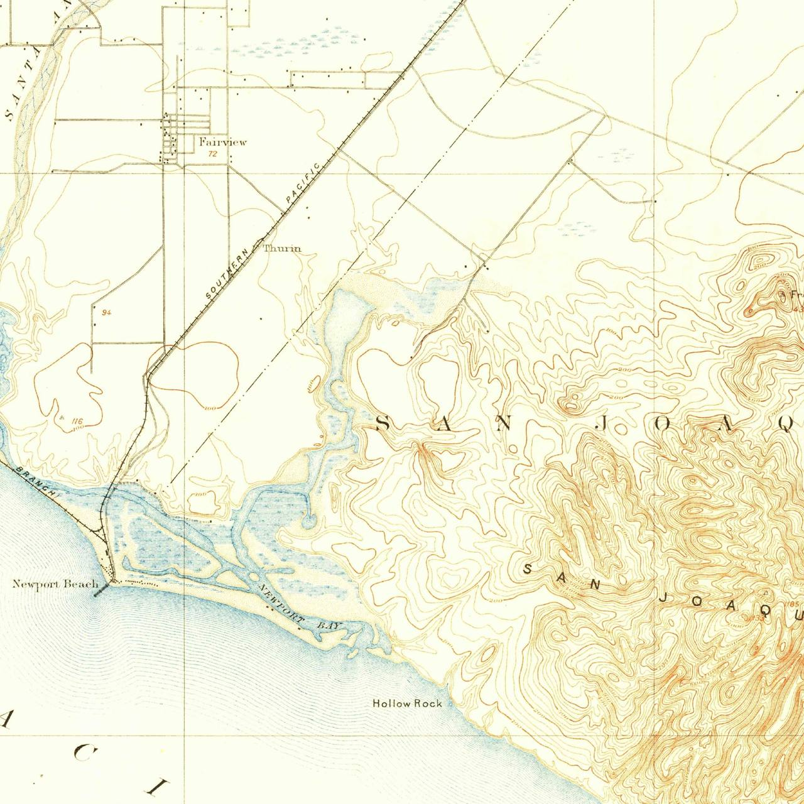
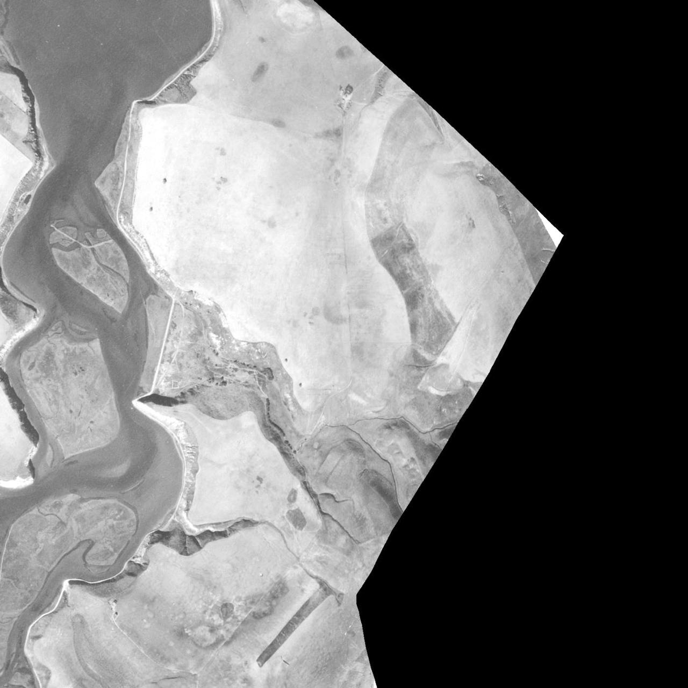
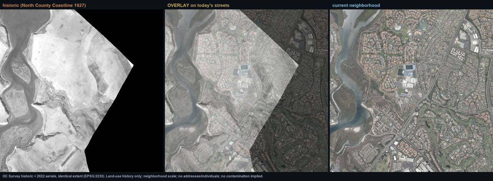
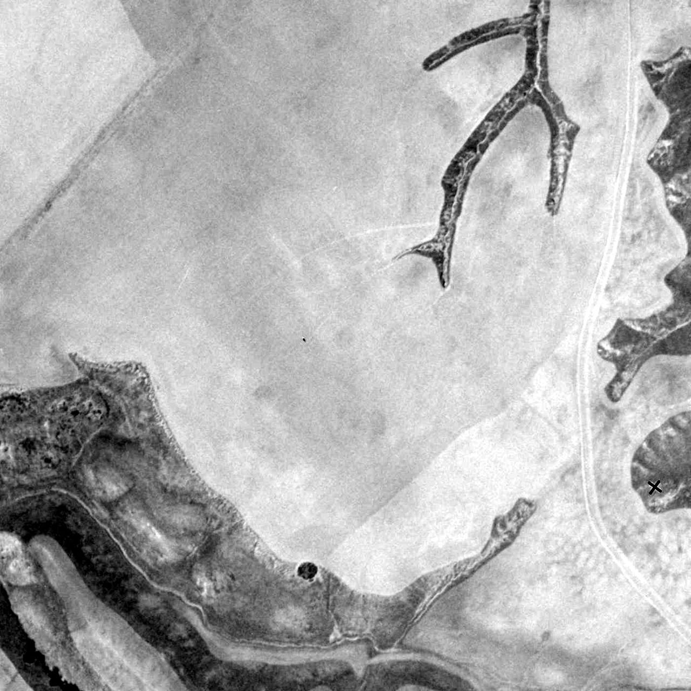
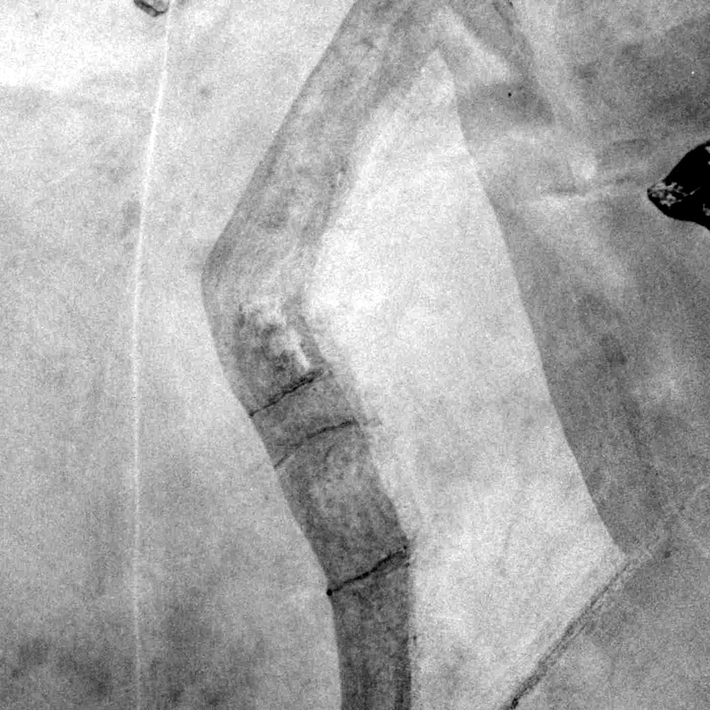
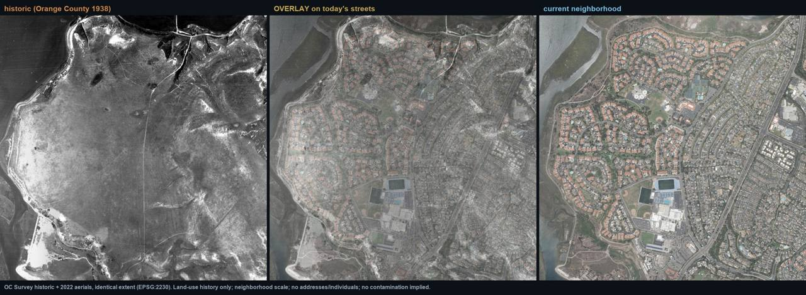
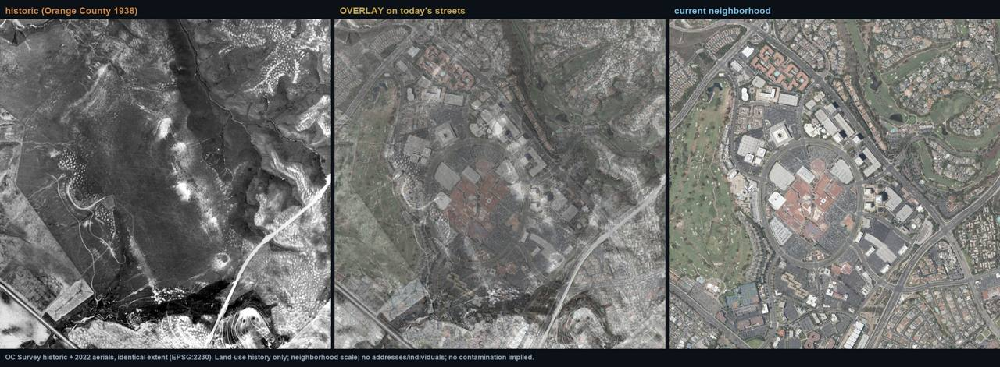
Environmental review
| Field | Finding |
|---|---|
| What review exists | EnviroStor + GeoTracker live REST pull over the Eastbluff/Back Bay box: 37 + 137 sites; a bay-wide "Upper Newport Bay Sediment Quality Investigation" exists (the estuary is a recognized sediment sink). [A1] |
| Sampled soil? | Yes, but only at post-1960 industrial/commercial cases: aerospace (Ford Aeronutronic/Loral), semiconductor (Rockwell/Conexant), dry-cleaner PCE (multiple), petroleum LUSTs, aviation/military (Santa Ana Heights). Zero agricultural / livestock / cattle-dip / ag-arsenic sites in the box. [A1] |
| Analytes tested | Solvents, PCE, petroleum, industrial metals per case. The only arsenic signals are industrial (circuit-board electroplating; Air National Guard), and across the bay in Costa Mesa, not at these neighborhoods. [A1] |
| Arsenic tested? | Only in industrial contexts; never for a ranch-era or agricultural question here. |
| Which arsenic signature | Neither. No lead-arsenate (orchard) screen and no arsenic-trioxide (dip) screen has ever been run on this ground. |
| Verdict | Never-tested for either legacy-agricultural arsenic signature; the modern record contradicts an agricultural/arsenic legacy site profile (it is post-1960 industrial throughout), while remaining structurally blind to a c.1910 feature unless rediscovered. |
Honest limits & counter-evidence
- Open mesa beside a bay is expected, not diagnostic. Grazed/fallow land was the condition of the entire Irvine Ranch coastal section; nothing in the 1901 topo or 1927/1931/1938 aerials is a cattle-handling feature, and the one Big Canyon "cow pastures" claim is grade C (single realtor source).
- Absence of record, honestly bounded: CDNC was not searchable live in the recon session (bot-gate), so "no dipping record" rests on Google-indexed CDNC + prior verified work; EnviroStor/ GeoTracker track modern regulated sites, not century-old vats.
- Santa Ana Heights ambiguity: it may sit on Rancho Santiago de Santa Ana rather than San Joaquin (grant line not crisply fixed); its later small-farm era makes the orchard lead-arsenate vector more relevant there than the dip vector, for the post-window farming era only.
- The quarantine proclamation is a cattle-movement order: being inside the district means herds had to be dipped somewhere before moving, it names no dip site and mandates no on-site vat.
This platform is an independent research and data-organization project. It does not provide medical advice and does not establish that any pesticide, property, organization, employer, school, water provider, government agency, or other party caused any illness. Publicly reported health events may not have been independently medically verified. Geographic and temporal overlap does not establish exposure or causation. Formal conclusions require authorized epidemiological analysis, verified medical information, exposure assessment, toxicological review, and independent scientific evaluation.
60 · The Statewide Tier: Fifteen Communities on the Probability Map
The dipping-probability map ranks the probability that arsenical cattle dipping occurred on or
near nineteen former ranches in 1907-1915, the practice, never contamination. Only the DOCUMENTED
tier is fact; every other tier is graded inference from quarantine-county intensity (USDA Circular
174, 1911: heavy = San Diego, Orange, Ventura, Santa Barbara, San Luis Obispo, Fresno;
lesser = LA, Riverside, San Bernardino, Kern, Tulare, Kings, Madera) plus documented cattle
operations under the compulsory March 1907 arsenical-dip law. No soil arsenic test for the dip
question has been run anywhere in California, and no California test anywhere has targeted the
dip signature, arsenic with little or no lead (arsenic trioxide, the cattle-dip poison), as
opposed to the lead-arsenate orchard signature (arsenic with lead). This chapter gives each
probability-map community one spread. Full rubric and per-ranch rationale:
research/statewide/DIPPING_PROBABILITY_RATIONALE.md.
Chapter figures (all communities):
San Juan Capistrano
History
- A stockmen's meeting at San Juan Capistrano, January 1908, whose "principal question… had to do with [the cattle tick]", four months before the dipping campaign. [B2, Blade Tribune 18 Jan 1908]
- 600-700 head dipped at Capistrano, May 1908, per Dr. Coleman, deputy state quarantine officer, in the county-ordered program whose documented dip chemistry was "the arsenic preparation recommended by the Government." [B2, LA Herald 27 May 1908; SJ Mercury 26 Jun 1908]
- Inside the 7 March 1912 last-held quarantine district (the Trabuco/Aliso/San Juan Capistrano backcountry), where the dipping obligation persisted longest. [A2, Johnson proclamation]
Dipping evidence tier
DOCUMENTED, named as a 1908 dipping locality in the primary press; the county program was arsenical. The parcel dipped within San Juan Capistrano is unrecorded.
Figures
·
Environmental review
| Field | Finding |
|---|---|
| What review exists | No community-scale dip-era review located; this area has not yet had a dedicated review audit in this project. Statewide EnviroStor "DIP VAT"/"DIPPING" search = 0 entries. [A1] |
| Sampled soil? | Comparator only: San Juan Hills HS (former grazing land) was DTSC-investigated and tested clean. [A1] |
| Analytes | DTSC school ag-suite where applied (OCPs + arsenic + lead), orchard framing. |
| Arsenic tested? | Not for the 1908 dipping question. |
| Which signature | Lead-arsenate (orchard) where tested nearby; dip signature never targeted. |
| Verdict | Never-tested at the documented dipping locality (location within SJC unknown). |
Honest limits & counter-evidence
The 1908 site is a locality name, not a parcel, nothing can or should be flagged on the ground. The SLO analog (a county inspector reporting 54-65 vats to his Supervisors in 1908) indicates the granular OC vat list sits in un-digitized county records, not online. Absence of record ≠ absence of fact, and equally, the documented practice implies nothing about residue today.
Yorba Linda / Santa Ana Canyon (Yorba)
History
- "Dipping … in progress at Yorba," May 1908, named in the same deputy-state-quarantine-officer interview as Capistrano and Trabuco. [B2, LA Herald 27 May 1908]
- A dedicated CDNC search for Yorba dipping returns only the 27 May 1908 article itself, no granular Yorba record survives in the digitized press. [B2 + absence of record]
- NE Orange County / Santa Ana Canyon district, cattle driven to the canyon-front ranches. [B2]
Dipping evidence tier
DOCUMENTED, named 1908 dipping locality under the county-ordered arsenical program; no parcel-level detail survives in digitized sources.
Figures
·
Environmental review
| Field | Finding |
|---|---|
| What review exists | None located for the dip question; no dedicated review audit yet performed for this community in this project. |
| Sampled soil? | No sampling located for any ranch-era arsenic question. |
| Analytes | - |
| Arsenic tested? | NO (in located materials). |
| Which signature | Neither signature ever targeted here. |
| Verdict | Never-tested. |
Honest limits & counter-evidence
The single-article record means the dipping site could lie anywhere in the historic Yorba lands; the community mapping (Yorba Linda / Santa Ana Canyon) is district-level, deliberately imprecise. Un-digitized Santa Ana local press and the county-veterinarian ledger are the only likely sources of finer detail.
Anaheim Hills (Bixby ranch, Santa Ana Canyon)
History
- "Dipping … at the Bixby ranch in Santa Ana canyon," May 1908. [B2, LA Herald 27 May 1908]
- The ranch is independently attested as a real, distinct holding, "a fire Sunday on the Bixby ranch in Santa Ana canyon", separate from the Long Beach Bixby operations. [B2, Enterprise (Riverside) 11 Sep 1907]
Dipping evidence tier
DOCUMENTED, named 1908 dipping locality under the county-ordered arsenical program.
Figures
·
Environmental review
| Field | Finding |
|---|---|
| What review exists | None located for the dip question; no dedicated review audit yet performed for this community in this project. |
| Sampled soil? | No sampling located for any ranch-era arsenic question. |
| Analytes | - |
| Arsenic tested? | NO (in located materials). |
| Which signature | Neither signature ever targeted here. |
| Verdict | Never-tested. |
Honest limits & counter-evidence
The historic Bixby ranch footprint is mapped only approximately onto modern Anaheim Hills; no vat coordinate exists in any located source. As at every documented site, the fact of the 1908 practice says nothing about soil residue in 2026, that question has simply never been asked of this ground.
Long Beach: Rancho Los Cerritos (documented) + Rancho Los Alamitos
History
- Rancho Los Cerritos (Nieto grant remnant; Temple, then Flint-Bixby): the ranch site museum documents Bixby-era sheep dipping, roughly 1866-1890, the one statewide case of dipping attested at a ranch by an institutional source, but the chemistry is unstated (sheep dips were often lime-sulfur, not arsenic). Subdivision ~1890 ended the sheep era. [B1/C]
- Rancho Los Alamitos (Bixby cattle ranch) straddles the LA/Orange county line, Long Beach, Los Alamitos, Rossmoor, Seal Beach, Cypress. [B1]
- Los Angeles County was a lesser-infested quarantine county under the 1911 federal tiering. [A1]
Dipping evidence tier
Los Cerritos: DOCUMENTED, chemistry unconfirmed (sheep dipping attested; arsenic not established; predates the 1907-1912 program). Los Alamitos: PLAUSIBLE (Bixby cattle ranch, lesser county).
Figures
evidence/images/T09-LOSCERRITOS/USC-CHS_CHS-7411_388c1ad4_adobes_barn_ca1890.jpg (adobes + barn,
c.1890) ·
evidence/images/T09-LOSCERRITOS/HABS_ca0208_011958pv.jpg (Los Cerritos ranch house,
HABS) ·
evidence/images/T10-LOSALAMITOS/Hornbeck_LosAlamitos_LAC_diseno468_preview.jpg (Los
Alamitos diseño) ·
evidence/images/T10-LOSALAMITOS/HALS-CA-90_drawing_00001r.jpg
Environmental review
| Field | Finding |
|---|---|
| What review exists | Southern Los Cerritos Wetlands Restoration IS/MND cultural assessment (2023): aerials 1927→, topos 1886/1896→. Los Cerritos Wetlands Oil Consolidation EIR (LSA 2017, Los Alamitos land): aerials 1928→, topos 1896→. Both are cultural-resources reviews, not Phase I ESAs. [A2] |
| Sampled soil? | Not for any ranch-era chemical question in these reviews. |
| Analytes | Full-text search of the 2017 EIR cultural section for "dipping / arsenic / cattle / tick / quarantine": zero hits. |
| Arsenic tested? | NO, not for the sheep-dip or any ranch-era question. |
| Which signature | Neither; and the attested dipping here may not have been arsenical at all. |
| Verdict | Never-tested, with the caveat that the documented practice's chemistry is itself unconfirmed. |
Honest limits & counter-evidence
The attested sheep-dip era closed ~1890, before the arsenical tick program; measured against that date the unreviewed window is ~37 years. The wetlands reviews index the coastal margin, not the inland Bixby Knolls/Lakewood core (Lakewood, built 1950-54, predates CEQA entirely). Rossmoor and Leisure World likewise predate modern review. Lime-sulfur is the leading alternative chemistry; nothing here establishes arsenic use.
Camp Pendleton (Rancho Santa Margarita y Las Flores)
History
- The giant ocean-front cattle grant, Pico (1845 diseño), Forster from 1864, O'Neill/Flood from 1882, running herds photographed at scale in 1900. [B1/A2, Bancroft land case + CHS photographs]
- San Diego County: heavy quarantine tier, among the very last counties cleared, arsenical dipping the standard method. [A1/B1]
- The federal record's unnamed "one large ranch" (~21,000 head, "lack of co-operation from the owner") is best placed in San Diego County by county-level inference only; Rancho Santa Margarita y Las Flores is a geographically suggestive but unconfirmed candidate, it must not be asserted. [A1/B1 + inference]
Dipping evidence tier
HIGHLY PROBABLE (federal land), heavy county + one of the largest cattle operations on the coast under the compulsory law. No vat located; and the land is a Marine Corps base, not homes (green-ring context on the probability map).
Figures
evidence/images/T13-SANTAMARGARITA/herd_cattle_santa_margarita_1900_CHS-2360.jpg ·
evidence/images/T13-SANTAMARGARITA/cattle_stream_santa_margarita_1900_CHS-2358.jpg ·
evidence/images/T13-SANTAMARGARITA/plat_santa_margarita_las_flores_1867_E-1362A.jpg ·
evidence/images/T13-SANTAMARGARITA/casa_rancho_santa_margarita_HABS_CA-48_015167.jpg
Environmental review
| Field | Finding |
|---|---|
| What review exists | Federal (DoD/CERCLA) environmental processes apply; they were not audited in this pass. No state EnviroStor dip-vat entry exists for this land. [A1 + absence] |
| Sampled soil? | Unknown to this project for the dip question. |
| Analytes | Not audited. |
| Arsenic tested? | Not established either way in located materials. |
| Which signature | No dip-signature test located. |
| Verdict | Not-audited (federal record class); never-tested in any located state record. |
Honest limits & counter-evidence
The separate period item about cattle driven into the surf on an unnamed "17,000-acre ocean-front grant" is a pre-eradication crude method, not a dip-site record. As federal land without housing, the residential-exposure frame that motivates the rest of this report does not apply here; the ranch matters chiefly as the strongest operations-scale candidate in the heavy-county south.
Simi Valley (Rancho Simi)
History
- Rancho Simi (San José de Nuestra Señora de Altagracia y Simi): Pico-family stock from the 1790s; a major cattle enterprise under José de la Guerra (1842-1858); Strathearn ranching era from the 1880s (corral branding photographed c.1915). [B1, Museum of Ventura County / histories]
- Ventura County: heavy quarantine tier; period accounts single out Ventura herds among the most tick-infested when the compulsory arsenical-dip law took effect (MacKellar & Hart 1911, named but not directly retrieved). [A1 / B1]
Dipping evidence tier
LIKELY, heavy county + documented long-running cattle range; no dipping record tied to the rancho by name.
Figures
evidence/images/T03-SIMI/bancroft_diseno_rancho_simi_1842_D-1091.jpg ·
evidence/images/T03-SIMI/huntington_10756_simi_land_water_1888.jpg
Environmental review
| Field | Finding |
|---|---|
| What review exists | Runkle Ranch/Canyon Specific Plan EIR (SCH 2002121143, certified 2004) for a large former-grazing tract; the earliest photo year its assessment reviewed could not be retrieved. [A2] |
| Sampled soil? | Not established for any ranch-era arsenic question. |
| Analytes | Unretrieved. |
| Arsenic tested? | Not in any located materials. |
| Which signature | Neither targeted. |
| Verdict | Never-tested (dip question). Structural note: no aerial imagery of Simi Valley predates 1927, so the entire dipping era sits below any possible aerial-review floor (gap ≥15 yr; ~35 yr if the common 1947 floor was used). |
Honest limits & counter-evidence
No vat is named to the rancho; California dipping compelled for scabies often used lime-sulfur, so even a documented dip event would need chemistry confirmation. Parcel-level 1907-1912 land use is unrecorded.
Fillmore (Rancho Sespe)
History
- Rancho Sespe (also recorded as "San Cayetano"), Ventura County; land-grant claim filed 1852 (Bancroft land case). [A2, Bancroft]
- Cattle range in a heavy quarantine county, then an early, thorough conversion to citrus: by the 1910s-1920s Rancho Sespe was a major citrus operation (nursery and packing-house photographs, 1914-1926). [A1 tiering / B1 archival photographs]
Dipping evidence tier
LIKELY, heavy county (Ventura) + documented cattle range (later citrus); no dipping record by name.
Figures
evidence/images/T07-SESPE/diseno_B-990_bancroft_78806.jpg ·
evidence/images/T07-SESPE/postcard_sespe_river_fillmore_front_203657.jpg
Environmental review
| Field | Finding |
|---|---|
| What review exists | No dedicated review audit performed for this community in this pass. |
| Sampled soil? | Not established. |
| Analytes | - |
| Arsenic tested? | Not in any located material for the dip question. |
| Which signature | Neither. Competing vector: the citrus era makes lead-arsenate the more probable legacy chemistry here if any arsenic were ever found. |
| Verdict | Not-audited / never-tested for the dip signature. |
Honest limits & counter-evidence
The citrus conversion is genuine counter-evidence for interpreting any future arsenic detection, orchard chemistry (As with Pb) would be the null explanation, and only the Pb ratio distinguishes it from dip residue. No vat, no test, no claim.
Rancho Santa Fe / Del Mar / Solana Beach (Rancho San Dieguito)
History
- Osuna grant (1840s): hide-and-tallow, open-grazing cattle rancho watered by the San Dieguito River and springs, grazed by Osuna heirs into the late 1800s. [B1]
- AT&SF railway interests acquired the tract c.1906; Rancho Santa Fe platted 1922 (Santa Fe Land Improvement Co.), Del Mar 1885/1908, Solana Beach 1920s, all decades before CEQA (1970) and before Phase I ESA practice. [B1]
- San Diego County: heavy tier, among the last four counties under quarantine (1 Apr 1910), white arsenic + soda + pine tar the permitted formula (1910). [B1, Pulling 1965]
Dipping evidence tier
LIKELY, heavy county + century-scale cattle range; built pre-CEQA (never reviewed); no vat named.
Figures
evidence/images/T06-SANDIEGUITO/HABS_ca1694_RanchoSantaFe_036660.jpg (HABS, Rancho Santa Fe; series
036660-036668 in the same directory)
Environmental review
| Field | Finding |
|---|---|
| What review exists | None for the original development, no master-plan EIR or Phase I exists; the communities predate the instruments. Representative in-region proxy floor: ~1946 aerials (low-medium confidence). [B1 + absence] |
| Sampled soil? | No. |
| Analytes | - |
| Arsenic tested? | NO. |
| Which signature | Neither. |
| Verdict | Never-reviewed, never-tested. Structural: the earliest aerial of this coast (~1928) postdates dipping's end by ~16 years, the dip era is invisible to any aerial-based review, at any floor. |
Honest limits & counter-evidence
No dipping record names the rancho; the CDNC search was not exhaustive (403s to automated query). Del Mar's coverage on the 1901 topo sheet is unconfirmed. "Never reviewed" describes an administrative gap, not a hazard.
Rancho Bernardo (Rancho San Bernardo)
History
- Rancho San Bernardo (Snook grant); the 1893 USGS Escondido topo, which predates the mandated-dipping era, labels "San Bernardo." [A1/B1]
- Master-planned 1962 (Hawn & Summers / Charles Luckman) and built largely 1962-1984 under AVCO, before CEQA (1970/1972). [B1]
- San Diego County: heavy tier; mandated arsenical dipping well established at county scale ~1907-1912, with county quarantine dates possibly running to ~1917. [B1]
Dipping evidence tier
LIKELY, heavy county + cattle range; built pre-CEQA; no vat named ("NONE BY NAME" is the plain-language record finding).
Figures
evidence/images/T05-SANBERNARDO/diseno_D-1387_San_Bernardo_Bancroft.jpg ·
evidence/images/T05-SANBERNARDO/Emory_1847_San_Pasqual_battle_sketch.jpg
Environmental review
| Field | Finding |
|---|---|
| What review exists | None for the original community, no community-scale EIR or Phase I was ever required or performed; CEQAnet holds only small recent infill items (library, park lighting, one 2005 project). [A2 + absence] |
| Sampled soil? | No, not for any ranch-era question. |
| Analytes | - |
| Arsenic tested? | NO. |
| Which signature | Neither. |
| Verdict | Never-reviewed, never-tested, with Rancho Santa Fe, the widest structural gap in the statewide set. |
Honest limits & counter-evidence
Several potentially relevant sources (a 6 MB ranching-survey scan; a nearby Phase I) are image-only PDFs that could not be text-searched; CDNC returned 403 to automated query. Both photographic records bracket the dip era without covering it: the 1893 topo is too early, the earliest usable inland aerial too late.
Rancho Peñasquitos / Mira Mesa / Carmel Valley (Rancho Santa Maria de Los Peñasquitos)
History
- An 1823 Mexican grant (~8,486 ac) on Los Peñasquitos Canyon and its perennial creek, expanded 1834; restocked 1921, and by 1962 described as "one of the largest cattle ranches in Southern California." [B1]
- The documented working core (adobe ranch house, corrals) lay along the canyon near today's Preserve, not necessarily under the modern residential footprints. [B1]
- San Diego County: heavy quarantine tier. [A1]
Dipping evidence tier
LIKELY, heavy county + large, water-favored cattle operation; terrain-plausible working facility; no dip record by name (the place-name "Penasquitos" appears on only 7 pages in the entire digitized national newspaper corpus, too sparse to be probative either way).
Figures
evidence/images/T04-PENASQUITOS/habs_ca2072_house_photo1_015244.jpg (Johnson-Taylor adobe) ·
evidence/images/T04-PENASQUITOS/habs_ca2072A_barn_photo1_015247.jpg (ranch barn, HABS)
Environmental review
| Field | Finding |
|---|---|
| What review exists | The Junipers CEQA cultural/historical review (Rancho Peñasquitos) reached a 1928 aerial; Debevoise Property Phase I ESA (Geocon 2018, Carmel Valley) floor 1939, topos to 1901/1903. [A2] |
| Sampled soil? | Not for any ranch-era arsenic question in these documents. |
| Analytes | Neither document contains the strings "dip," "vat," or "cattle dip." |
| Arsenic tested? | NO. |
| Which signature | Neither. |
| Verdict | Never-tested; review gap 16-27 years, the entire 1823-1912 ranching era lies below every photo floor consulted. |
Honest limits & counter-evidence
California dipping was driven by episodic quarantines, not the permanent vat network of the Gulf South, the prior for a fixed vat is genuinely lower. Topo maps reach 1901/1903 but cannot resolve a working corral or vat.
Rancho Cucamonga
History
- Rancho de Cucamonga: 13,045 ac granted to Tiburcio Tapia, 1839, began as hide-and-tallow cattle, then converted early and intensively to vineyards (California's first commercial-winery district) and citrus/olives, well before the arsenical-dip era. [B1]
- San Bernardino County: lesser quarantine tier. [A1]
Dipping evidence tier
PLAUSIBLE, lesser county; cattle era largely pre-dated the program; the dominant land use in the dip window was orchard/vineyard, which lowers the prior for an arsenical cattle dip here.
Figures
evidence/images/T11-CUCAMONGA/Huntington_SolanoReeve_MapOfRanchoCucamonga_S71_1893-11_id12929.jpg ·
evidence/images/T11-CUCAMONGA/Huntington_SolanoReeve_CucamongaCreek_1870-1880_id11383.jpg
Environmental review
| Field | Finding |
|---|---|
| What review exists | No site-specific community historical-aerial review was retrievable; the regional Phase I aerial floor is ~1938 (gap ~26 yr). [A2 + absence] |
| Sampled soil? | Not established for the ranch-era question. |
| Analytes | Regional Phase Is screen former vineyard/orchard land for pesticide residues. |
| Arsenic tested? | Where screened at all, in the orchard/vineyard context. |
| Which signature | Lead-arsenate / calcium-arsenate (orchard) is the plausible legacy pathway here, and the one the system already looks for. The dip signature has never been targeted. |
| Verdict | Tested-for-the-wrong-source where screened; never-tested for the dip signature, noting the dip prior here is low. |
Honest limits & counter-evidence
This is the statewide set's clearest case where the competing orchard-arsenic vector better explains any arsenic that might ever be found. No vat is named; CDNC/Chronicling America returned 403 to automated query, so the newspaper negative is bounded.
Jurupa Valley / Riverside (Rancho Jurupa)
History
- Rancho Jurupa: 40,569 ac granted to Juan Bandini, 1838, straddling the Santa Ana River; under Louis Rubidoux, "one of the most prosperous stock raisers in Southern California", plus orchards, vineyards, grain, a grist mill. [B1]
- Riverside County: lesser quarantine tier. [A1]
Dipping evidence tier
PLAUSIBLE, lesser county + intensively stocked river rancho; perennial water and sustained herds make a working facility plausible in the abstract; nothing is named.
Figures
evidence/images/T12-JURUPA/CHS-8976_rubidoux-ranch-house-ca1869.jpg ·
evidence/images/T12-JURUPA/CHS-12796_rubidoux-rancho-blacksmith-shop-1960.jpg
Environmental review
| Field | Finding |
|---|---|
| What review exists | Atlas Technical Consultants Phase I ESA (ASTM E1527-21, 2024, a Jurupa Valley parcel): EDR topos from 1896, aerials from 1931. [A2] |
| Sampled soil? | No, Phase I only (records + visual). |
| Analytes | The Phase I contains zero occurrences of dip/vat/arsenic/tick/cattle; its only agricultural note is generic ASTM boilerplate. |
| Arsenic tested? | NO. |
| Which signature | Neither. |
| Verdict | Never-tested; review gap ~19 years. |
Honest limits & counter-evidence
One parcel's documentary reconstruction (undeveloped land → agriculture from 1938 → lumber yard) constrains nothing about a 40,000-acre grant. California's dip-vat density was lower than the Southern fever-tick states, the "no named vat" result is weaker evidence here than it would be in Florida.
Valencia / Santa Clarita (Rancho San Francisco → Newhall Ranch)
History
- Rancho San Francisco, later the core of the Newhall Ranch / Newhall Land and Farming Company, northwestern LA County along the Santa Clara River. [B1]
- Los Angeles County: lesser quarantine tier. [A1]
- Uniquely in this set, the land carries a large, modern CEQA record: Specific Plan FEIR (2003), RMDP-SCP EIS/EIR (2010), and multiple ASTM Phase I ESAs. [A2]
Dipping evidence tier
PLAUSIBLE, lesser county, cattle range; and a competing orchard-arsenic vector: the arsenic screening that exists here was orchard/row-crop-driven, not dip-driven.
Figures
evidence/images/T08-NEWHALL/WikimediaCommons_RanchoSanFrancisco_diseno_map_1843_PD.jpg ·
evidence/images/T08-NEWHALL/HABS_ca1195_RanchoCamulos_020244.jpg
Environmental review
| Field | Finding |
|---|---|
| What review exists | Newhall Ranch Specific Plan FEIR 2003; RMDP-SCP EIS/EIR 2010; tract EIRs; Phase I ESAs (ENTRIX 2008 and others) reviewing historic aerials/topos. 2013: the LA Regional Water Board required soil testing of historically farmed parcels before development. [A2] |
| Sampled soil? | YES, on historically farmed parcels, per the 2013 RWQCB workplan. |
| Analytes | Arsenic + organochlorine pesticides (DDT and degradates). |
| Arsenic tested? | YES, the partial counter-example in the statewide set. |
| Which signature | Lead-arsenate / orchard-row-crop framing. The testing targeted 20th-century farm chemistry; it was not designed for, and does not resolve, a localized dip-signature source (As with little/no Pb). |
| Verdict | Tested-for-the-wrong-source (from the dip question's standpoint), while demonstrating that the system can catch arsenic when the historical trigger is documented. |
Honest limits & counter-evidence
The earliest aerials of this land (~1927) postdate dipping's end, so even these extensive reviews could not see the dip era; the exact earliest-aerial year each Phase I reached is not printed in the searchable text (~1927 is the archive floor, not a quoted review floor). Any arsenic found by the 2013 program has an orchard-first explanation.
Tejon (Tejon Ranch, Lebec)
History
- Tejon Ranch (Rancho El Tejón and associated grants): Edward F. Beale's vast Kern County holding; a working cattle empire into the modern era, mid-century operations fed 12,000 head across ~298,000 acres. [B1, LOC/Huntington photographic record]
- Kern County: lesser quarantine tier; the ranch remains largely unbuilt today. [A1 / B1]
Dipping evidence tier
PLAUSIBLE (unbuilt), huge cattle operation, but a lesser-infested county, and the land is mostly not under housing (green-ring context).
Figures
evidence/images/T14-TEJON/LOC_2002706073.jpg and companion LOC photographs (1888-1890) and Fort
Tejon HABS documentation in evidence/images/T14-TEJON/, item-level attribution in
research/statewide/IMAGE_INDEX.md.
Environmental review
| Field | Finding |
|---|---|
| What review exists | No review audit performed for this target in this pass; modern Tejon development EIRs were not examined. |
| Sampled soil? | Not established. |
| Analytes | - |
| Arsenic tested? | Not in any located material for the dip question. |
| Which signature | Neither. |
| Verdict | Not-audited; largely moot for residential exposure while the land stays unbuilt. |
Honest limits & counter-evidence
Interior-Kern tick pressure is less documented than the coastal south. The Tejon Ranch Company records, 1912-1945 (Sherman Library, incl. 169 photographs), are the archive most likely to name any working/dipping facility, unexamined.
Miller & Lux (Los Baños / San Joaquin Valley)
History
- Miller & Lux ran one of the largest integrated cattle enterprises in the American West, with San Joaquin Valley holdings across Stanislaus, Merced, Fresno, Kings, and Kern counties (1935 corporate cadastral map) and its operational heart near Los Baños. [B1/A2, corporate maps]
- Fresno County: heavy quarantine tier, but tick persistence in the hot interior valley is less certain than on the coastal ranges. [A1 / inference]
- The land today is overwhelmingly farmland, not master-planned housing. [B1]
Dipping evidence tier
PLAUSIBLE (farmland), large cattle operation in a heavy county, discounted for uncertain valley tick ecology and for the absence of a residential build-out.
Figures
evidence/images/T15-MILLERLUX/LOC_KernCounty_ranches_1888_britton-rey.jpg (1888 Britton & Rey
ranch-lands map)
Environmental review
| Field | Finding |
|---|---|
| What review exists | No review audit performed for this target in this pass. |
| Sampled soil? | Not established for the dip question. |
| Analytes | - |
| Arsenic tested? | Not in any located material for the dip question. |
| Which signature | Neither. |
| Verdict | Not-audited; no residential exposure frame at present. |
Honest limits & counter-evidence
The corporate archives (Bancroft Miller & Lux records; the Huntington's Latta collection; UC Davis) are the record class that could name working facilities across the holdings, none examined here. Dispersed holdings across five counties mean "Miller & Lux" is an enterprise, not a single testable site.
What would change any tier
A named arsenical dip record (e.g., a county-veterinarian vat list) promotes an inference tier to DOCUMENTED. A soil arsenic test, distinguishing the lead-arsenate orchard signature from the arsenic-trioxide dip signature, is the only act that speaks to residue, and it has been run for the dip question nowhere in California. These tiers are a research prioritisation, not a statement about any community.
This platform is an independent research and data-organization project. It does not provide medical advice and does not establish that any pesticide, property, organization, employer, school, water provider, government agency, or other party caused any illness. Publicly reported health events may not have been independently medically verified. Geographic and temporal overlap does not establish exposure or causation. Formal conclusions require authorized epidemiological analysis, verified medical information, exposure assessment, toxicological review, and independent scientific evaluation.
What we're looking for, where it is, and where to dig
The paper trail took this investigation as far as public digital records allow. Two kinds of work remain, and both need hands and instruments this project doesn't have: finding the vat locations in physical archives, and testing the soil where the record points. This chapter lays out exactly what to look for, where it lives, and where a spade should go first.
Part 1: What would name a vat, and which archive holds it
No California agency ever kept a vat register, so the locations survive only in scattered private and county records. In rough order of likely payoff:
| What we're looking for | Why it would settle it | Where it physically lives |
|---|---|---|
| Rancho Mission Viejo / O'Neill ranch business records, 1900-1920, ledgers, foreman correspondence, cattle accounts, dipping receipts, quarantine paperwork | Dipping was a mandated, recurring expense; a working ranch generated receipts and log entries for arsenic purchases, vat construction, and dipping days | Sherman Library (Corona del Mar), O'Neill/Irvine Ranch collections (closest to the author; first visit); UCI Special Collections; the private RMV corporate archive |
| Ranch photo albums / "photo books" showing corrals, chutes, and the working grounds | A vat and its drain pen are unmistakable in a ranch photograph; a caption may name the spot | Sherman Library; Camp Pendleton Historical Society (Santa Margarita ranch); San Juan Capistrano Historical Society; family collections (Baumgartner, O'Neill) |
| Manager / foreman logs and diaries | Day-to-day ranch operation, "dipped the Trabuco cattle," "built the vat at ___" | Same repositories; oral-history transcripts (e.g., the Chandler and Baumgartner ranch families) |
| County Veterinarian (Dr. W. S. McFarlane) orders + Board of Supervisors minutes, 1907-1913 | The county ordered the 1908 dips; the disposition of the Levengood claim and any vat directives would name sites | Orange County Archives (Santa Ana) |
| State Veterinarian biennial reports + Cattle Protection Board files | The state analog kept county vat counts (proven for San Luis Obispo); Orange County's equivalent may name locations | California State Archives (Sacramento), Dept. of Agriculture record groups F3741/F3742/F3744 (remote reference request first) |
| Historic ranch aerials & maps of Bell Canyon | Could show a vat/drain pen on the documented Joplin ground | National Audubon, Starr Ranch Sanctuary; Huntington; USC/UCLA |
Detailed pull-lists and draft request letters are staged in
research/archives/RECORDS_REQUESTS_2026-07.md.
Part 2: Where soil testing should take place
Testing is the resolver the whole report keeps arriving at. It should be authorized, landowner- permitted, and analyte-correct. The universal protocol, at every location: sample the 0-6 inch child-contact horizon (yards, parkways, parks, common areas), test total and bioavailable arsenic (not total alone), always run lead alongside arsenic to separate the two signatures, add arsenic speciation, and include indoor house dust where possible (the pathway least affected by surface cover).
The two signatures, one more time, because the whole test design hinges on it:
Priority grounds:
1 · Bell Canyon / Coto de Caza, the documented dip ranch (highest priority). This is the only place we can name a dip from the record, and the old Joplin home place in Bell Canyon appears to remain undeveloped open ground (apparently the Starr Ranch Sanctuary facility area). A short soil-arsenic transect there, with Audubon's permission, is the single cleanest test in the entire investigation: documented dipping, undisturbed ground, no houses in the way.
2 · Ladera Ranch, the open-space corridor and parks. No vat is documented in the footprint and imagery shows none, so Ladera testing is screening, not confirmation: sample the preserved Trabuco greenbelt and the neighborhood parks/common areas (the child-contact zones), plus any yard soil a homeowner volunteers. Because mass grading (1999-2006) likely diluted and scrambled any surface residue, a null result would not fully clear the site and a hit would be significant, design and interpret accordingly.
3 · The school grounds, the fixable gap. Where arsenic was tested (Carl Hankey), it was the orchard signature; where it wasn't (Oso Grande and the rest), nothing was sampled. A targeted arsenic-plus-lead screen of the play areas at the community schools would close a gap that costs little and reassures, or informs, a lot.
4 · The statewide tier, as prioritised by the map. The documented and highly-probable ranches (Chapter 60) are where any broader screening program should begin. The California probability map is the sampling plan's front page:
What a result would mean. A dip-signature hit (arsenic well above ~11-12 mg/kg background, with low lead) on documented ground would convert a century-old paper hazard into a measured, manageable fact. A clean result would retire the question honestly. Either outcome is worth having, and neither has ever been obtained, because the test has never been run.
70 · The Program History: California 1907 to March 1912
Hypothesis-neutral. Every claim carries a source grade [A1/A2/B1/B2/C]. This chapter establishes what the state-mandated program was and where it ran in Orange County. It does not place a vat on any parcel. Source grades: A1 official machine-readable / primary research; A2 official webpage or filing; B1 research-institution report; B2 reputable press quoting named sources; C advocacy/unverified.
70.1 The law and the chemistry
California made arsenical cattle-tick dipping compulsory in 1907, administered by the State Veterinarian (Dr. Charles Keane, Sacramento) in cooperation with county Boards of Supervisors and the USDA Bureau of Animal Industry [B1]. The federal circular written for this state, MacKellar & Hart, Eradicating Cattle Ticks in California, BAI Circular No. 174 (1911), printed the working formula [A1, S-USDA-C174]:
| Ingredient | Quantity |
|---|---|
| White arsenic (arsenic trioxide, As₂O₃) | 8 lb (up to 9-10 lb for range cattle) |
| Carbonate of soda (sal soda) | 24 lb |
| Soap | 24 lb |
| Pine tar | 1 gal |
| Water | 500 gal |
The signature poison is white arsenic, arsenic trioxide, an inorganic arsenic source with little or no lead. This matters analytically: it is a different chemical fingerprint from the lead-arsenate used on orchards (arsenic bound with lead), and it is the fingerprint no California soil test has ever targeted [A1]. The State Veterinarian's Fifth Biennial Report (1908) records that "the arsenical dip was first used in California during 1907" and remained "our most effective remedy ever since" [A1/A2].
70.2 Vat engineering, in brief
USDA published engineering plans and required a poison sign, "WARNING! The fluid in this vat is POISONOUS to man and all animals", at every vat [A1, S-USDA-C174 p.293]. Three designs appear in the California circular: the swim vat (a long concrete trench deep enough for cattle to swim, ~2,000-4,000 gal, with a sloped drip pen; a large, durable, photographically obvious footprint), the cage vat ($55-65, dips 30-50 head/hour, no drip pen, installed against an existing corral), and the wade tank (under $10 in lumber, ~15 ft long, for very small herds) [A1].
The design determines the contamination footprint and its detectability. A swim vat would likely show on the 1.15 ft/px aerial imagery; a cage vat or wade tank need produce no distinctive new surface structure at all [A1]. At least one Orange County facility in this period was a swim vat, the State Veterinarian described cattle "swimming through the vat" [A1/A2], but the circular's own cost tables establish that cheap, invisible installations were the norm the imagery search cannot rule out.
70.3 The quarantine geography
Circular 174 (p.285) classified Orange County among the counties "heavily infested" with cattle ticks, alongside San Luis Obispo, Santa Barbara, San Diego, Fresno, and Ventura, and placed it south of the state quarantine line [A1, S-USDA-C174]. This is a county-level classification over roughly 800 square miles; it establishes program scope, not a vat location.
The 7 March 1912 proclamation (Gov. Hiram Johnson, on Keane's certification) released all of Orange County from quarantine except the south-and-west district, defined by metes and bounds from Newport Beach along the Newport-Tustin road to the Santa Ana-Trabuco road, to Aliso Canyon road, to the north line of Township 6 South, Range 6 West [A1/A2, proclamation pulled from California State Library scan]. The T6S north line is ~33.69°N; Ladera (33.55°N), San Juan Capistrano, Trabuco, Newport Coast, and Eastbluff all sit south of it, inside the March-7 district where the tick, and the dipping obligation, held longest. The proclamation is a cattle-movement quarantine: it names no dip site and mandates no on-site vat [A1/A2].
70.4 The four named 1908 Orange County sites
The primary press names specific dipping locations in 1908, every one in the eastern/southern
county, none on the coastal-central Irvine Ranch. Source: Los Angeles Herald, 27 May 1908, p.10,
quoting Dr. Coleman, deputy state quarantine officer (CDNC LAH19080527) [B2].
| Named site (OCR-corrected) | District |
|---|---|
| Ranch of J. C. Joplin, Trabuco Canyon | SE Orange County, Santa Ana Mtns foothills |
| Capistrano (San Juan Capistrano) | S Orange County |
| Yorba | NE Orange County, Santa Ana Canyon |
| Bixby ranch, Santa Ana Canyon | NE Orange County |
Two corroborating reports confirm the dipping was county-ordered and arsenical: the San Jose
Mercury-News (26 Jun 1908) records six head of J. E. Levengood's cattle dead after a dip with
"the arsenic preparation recommended by the Government" [B2, CDNC SJMN19080626]; the Los
Angeles Herald (25 Jul 1908) reports E. J. Levengood suing the County of Orange, the dipping
"done by order of the county veterinarian, Dr. W. S. McFarlane" [B2, CDNC LAH19080725]. The
State Veterinarian disputed the poisoning on autopsy, attributing the deaths to a 30-35-mile
drive [A1/A2], which itself shows cattle were driven long distances to fixed dipping facilities.
These name ranches and districts, not vat coordinates. Of the four, the Joplin herd was dipped on or adjacent to Rancho Trabuco, land the O'Neill interests held, but the herd was Joplin's, not the O'Neill operation, and the site is ~8.4 miles from the Ladera footprint, outside Zone B [B2/B1].
70.5 The 1912 releases: the program's dated end
The Orange County arsenical-dipping era ran ≈1907 to March 1912. The release is confirmed in three independent papers in the same week [B2]:
| Source | Date | Text |
|---|---|---|
| San Francisco Call | 8 Mar 1912 | "QUARANTINE AGAINST FEVER TICK IS RAISED" |
| San Bernardino Sun | 9 Mar 1912 | "LIFT THE QUARANTINE… Orange County No Longer Dangerous" |
| Visalia Times-Delta | 15 Mar 1912 | Federal order text: "In California, the county of Orange is released from quarantine" |
By 30 June 1912 the residual quarantined ground had shrunk to the extreme southwestern corner of the county (the San Clemente / San Onofre vicinity), per the State Veterinarian's Sixth Biennial Report and its infestation-map plate [A1/A2]. The last-holdout "one large ranch" is unnamed in every located record and is best placed, by inference, in San Diego County, not Orange, not Irvine [B1, county-level only].
Consequence for imagery. A program ending in March 1912 leaves a seventeen-year gap to the earliest aerial photography (1929). Any facility decommissioned at the program's end had seventeen years to disappear before the first photograph, which is why the archival record, not the photographic one, is where the vat question is most likely to be resolved [A1].
Source registry: S-USDA-C174, S-USDA-C183 [A1]; 1912 Johnson proclamation (California State
Library) [A1/A2]; State Veterinarian Biennial Reports 5th/6th [A1/A2]; CDNC press items
LAH19080527, SJMN19080626, LAH19080725, and the 1912 releases [B2]. Full grading in
chapter 73.
71 · What Other Places Did: The Contrast
Hypothesis-neutral. This chapter compares administrative measures, not contamination. It never claims California "did nothing", only that no dip-vat-specific inventory, notification, cleanup guideline, or remediation program has been located in searchable public records. Grades: [A1/A2/B1/B2/C]. "Not located" ≠ "does not exist"; it reflects web-searchable records plus bot-blocked agency pages, and is an evidence gate, not a finding.
71.1 The single structural difference
The same arsenical chemistry was used across three jurisdictions. What differs is who built and ran the vats, and that difference determined whether anyone wrote down where they were.
| Who built/ran the vats | Sites recorded? | Follow-up later? | |
|---|---|---|---|
| Southeast US (Florida / USDA-FS) | Government-run program; state/federal crews built and operated vats | Yes, FL: 3,000+ documented in state records | FL voluntary cleanup regime; USDA-FS CERCLA remediation on forest land |
| Australia (NSW) | Government-owned dip network | Yes, register of ~1,600+ sites | s.10.7 buyer notification + 1996 residential clean-up guidelines |
| California | Ranch-run, individual ranchers built and mixed dips from a mailed federal circular | No agency register located | No follow-up located in any later decade |
The California program was compulsory and state-administered on paper (State Veterinarian + county Boards of Supervisors, 1907 law), but the physical vats were a ranch responsibility. USDA Circular 183 told ranchers to buy bulk white arsenic and mix it on-site, and noted that "homemade dips are the ones most commonly used" [A1, S-USDA-C183]. No state or federal office is recorded as having inventoried where those homemade vats stood [B1 + absence].
71.2 Southeast US / Florida: government-run and logged
Florida's dipping ran for decades and was operated by the program itself. As a result:
- ~3,000+ vat sites are named in old Florida state records, though a University of Florida team went looking precisely because so many had been "abandoned without recording their locations" (~3,241 records, locations largely unknown) [B2 / underlying A1, S-UF-VATS].
- Florida keeps a (weak) public county-level list and a statutory regime: Statute §376.306 makes private owners liability-exempt and cleanup voluntary, to a residential target of 2.1 mg/kg arsenic (Ch. 62-777 SCTL) [A2, read directly].
- The USDA Forest Service funds CERCLA (Superfund) remediation of arsenical dip-vat sites on national-forest land in the Southern Region [B1, ITRC].
Even the "messy" US Southeast did more than California: a public list, a statutory cleanup target, and an actively funded federal remediation program on public land.
71.3 Australia (NSW): the full apparatus California lacks
New South Wales dipped on the same chemistry (arsenic until tick resistance ~1955, then DDT). When the contamination was recognised, the state did three things the California record shows no sign of [A2, S-NSW-DIP]:
- Built a public register of its ~1,600+ known dip sites, maintained by the Department of Primary Industries (a "Cattle Dip Site Locator").
- Notes a former dip site on the property's planning certificate, the Section 10.7 certificate a buyer receives, so the site history travels with the land at sale.
- Published residential clean-up guidelines (1996) for building on former dip sites, plus a waste-disposal pathway for dip soil (NSW EPA Approval 1999/03).
NSW can even state the uncomfortable number California cannot: of 254 demolished dip sites, it has recorded that 29 now have houses over them, a fact it can state only because it kept the list [A2]. The records survive because the network was government-owned.
71.4 California: ranch-run, never inventoried, and explicitly excluded today
California ran the quarantine but not the vats, and no dip-vat-specific measure has been located at any stage [B1 + absence]:
| Measure | California status |
|---|---|
| Site inventory / register | None located (DTSC / CDFA / County Ag Commissioners) |
| Buyer / planning notification | None dip-specific, only generic EnviroStor / Natural Hazard Disclosure / Prop 65 |
| Arsenic cleanup guideline | Not dip-specific; general DTSC screening, no cleanup below background (SoCal ambient ~12 mg/kg) |
| Remediation / liability program | None dip-specific; case-by-case under DTSC / RWQCB only |
| Vat locations recorded at the time | No surviving inventory located |
The sharpest point is the closest analog program. DTSC's Interim Guidance for Sampling Agricultural Properties (2008) targets land where chemicals were applied uniformly, orchards, row crops, and expressly excludes "pesticide mixing/loading areas … animal facilities … and other areas that may have been treated differently" [A2]. A cattle-dip vat is exactly that excluded point source. Where California does test former farm soil, the framework is built for the field-scale lead-arsenate signature, not the point-source white-arsenic dip signature.
71.5 Why the asymmetry: without any cover-up
The gap is ordinary, not a scandal. Four non-sinister reasons plausibly explain it [B1]:
- California's dipping ended ~1912, roughly 50 years before Florida's (1961), its vats were demolished and buried long before modern environmental law existed.
- California was a smaller, earlier, shorter theater than the Gulf South (the mass balance in chapter 72 implies ~50-150 vats, versus Florida's 3,000+).
- California's high natural background arsenic (~11-12 mg/kg) and its background-not-below policy lower the regulatory salience of diffuse arsenic.
- California's agricultural-soil attention went to orchard lead-arsenate and DDT, which its programs do address, not to the cattle dip.
None of these prove dip residues are absent. They explain only why a dedicated program was never built. The honest shape of the gap: a well-documented poison whose California sites were never written down, so a century later the general fact (printed by USDA in 1911) and the specific ground have no record connecting them. The same cheap act the overseas programs eventually performed closes it, a probe in the ground.
Verification limits (researcher-flagged): direct retrieval of the NSW and ITRC pages was bot-blocked during research, their figures are as reported by those pages; the NSW 1996 guideline PDF was not opened, so do not attribute a specific arsenic number to it; the s.10.7 exact wording was not retrieved (B2). California "not located" reflects searchable records plus Cloudflare-blocked agency pages; a direct records request to DTSC, the State Water Board, CDFA, and the Orange/San Diego County Agricultural Commissioners is the next evidence gate.
Source registry: S-UF-VATS [B2/A1], S-NSW-DIP [A2], S-ITRC-CDV [B1], S-USDA-C183 [A1], DTSC 2008 Interim Guidance [A2]. Full grading in chapter 73.
72 · The Arsenic Model: a Mass Balance in Pounds
CLASSIFICATION: MODEL ESTIMATE · Confidence: Low. Every number in this chapter is a mass-balance thought experiment built from the published USDA dip formula and from soil-arsenic concentrations measured in Australia and the US Southeast, not in California. No California dip-site soil has ever been tested. These figures state what is plausible, not what is. They could be wrong by an order of magnitude (~10×) in either direction. Nothing here asserts that any California soil is contaminated. Grades: [A1/A2] for inputs; the model output is MODEL ESTIMATE throughout.
72.1 Inputs (all sourced)
- USDA California formula: 8 lb white arsenic (As₂O₃) per 500 gal; up to 9-10 lb for range cattle [A1, S-USDA-C174 p.291].
- Arsenic fraction of As₂O₃: 75.7% by mass (from molar masses).
- Vat size: swim vats held ~3,000-4,000 gal; solution topped up as arsenic was carried off [A1].
- Measured soil arsenic near vats elsewhere (empirical anchor): ~500-3,000 mg/kg near the bath (NSW to 1,200-3,000 mg/kg) [A2, S-NSW-DIP].
- California background arsenic: ~11-12 mg/kg upper bound (DTSC HHRA Note 11; SF Bay RWQCB ambient 11 mg/kg) [A2].
- Health screening levels: EPA residential RSL 0.68 mg/kg; California DTSC residential 0.11 mg/kg (both cancer-based) [A2].
72.2 Results: MODEL ESTIMATE
Computed by scripts/arsenic_mass_balance.py (assumptions stated inline; reproducible).
| Quantity | MODEL ESTIMATE |
|---|---|
| Elemental arsenic per 8-lb charge | 6.1 lb (dip-fluid strength ~1,450 mg As/L) |
| Arsenic standing in one full vat at a time | 3,000 gal → 36 lb; 4,000 gal → 48 lb |
| Lifetime throughput per vat (poured through, replenished over 3-10 yr) | ~145-1,200 lb As; central ~470 lb |
| Arsenic in the ground per heavily-used vat (vat + apron + drain zone at 500-3,000 mg/kg) | ~100-500 lb As (low 32 / high 857) |
| Statewide ceiling (total white arsenic ever purchased by the program) | ~33,000-165,000 lb (15-75 t) As |
| Statewide near-vat concentrated fraction | ~6,600-66,000 lb (3-30 t); central ~10 t |
| Implied number of vats | ~50-150 (short, small program; Florida had 3,000+) |
The statewide figure is bounded by an independent cross-check: a throughput analysis (USGS Arsenic Historical Statistics DS140 + the USDA cattle-drag-out method) caps total white arsenic ever used by the whole California program at ~15-75 t elemental As across ~6-8 seasons. No more arsenic can sit in California soil than was ever purchased and poured. Two independent methods agree on ~3-30 t concentrated near vats, central ~10 t; the remainder dispersed thinly across rangeland via cattle drag-out or was discarded as spent fluid. The earlier ~20-100 t statewide figure assumed 200-1,000 vats and is superseded, it was inconsistent with the ceiling.
72.3 Toxicology yardsticks
The per-site numbers are the ones that matter for screening any single location. A dip site at the empirical anchor of 500-3,000 mg/kg would sit far above every yardstick:
| Yardstick | Value | A dip site (500-3,000 mg/kg) is… |
|---|---|---|
| EPA residential screening level (RSL) | 0.68 mg/kg | ~700-4,400× |
| California DTSC residential | 0.11 mg/kg | far above |
| California regional background | ~11-12 mg/kg | ~40-270× background |
Because California background arsenic already sits near a 1×10⁻⁴ cancer risk, the state regulates arsenic against background, which is precisely why a point source rising 40-270× above background is the thing a soil test would reveal [A2]. Arsenic is an IARC Group 1 human carcinogen (skin, lung, bladder) and does not degrade; the real-world concern is chronic, not acute, with children the sensitive receptor via incidental soil ingestion, and the inhalation pathway largest during mass grading/earthmoving.
72.4 What the model does not claim
Mass grading neither creates nor destroys arsenic: it can dilute a hot spot (lowering mg/kg while spreading the mass) or relocate it intact. None of this is knowable for any specific site without (a) locating the vat and (b) testing the soil, the two things never done in California. The material toxicity of the chemical in the bag (one 8-lb charge ≈ tens of thousands of theoretical adult lethal doses) is context only, it is not an exposure or harm estimate; soil is dilute, arsenic sorbs to Fe/Al oxides, and is only partly bioavailable. This entire chapter is a MODEL ESTIMATE and is not a measurement.
Source registry: S-USDA-C174 [A1]; S-NSW-DIP [A2]; DTSC HHRA Note 11, EPA RSL [A2]; USGS DS140
[A1]. Model output: MODEL ESTIMATE, Confidence Low, reproducible via
scripts/arsenic_mass_balance.py. Full grading in chapter 73.
73 · Methods and Sources
The single methods chapter for The California Report. Every rule that governs the other chapters is stated here once, so the area and history chapters can carry a one-line footer instead of repeating boilerplate. This chapter is hypothesis-neutral by design: the grading and counter-evidence rules exist to keep any single hypothesis from being silently favored.
73.1 Source grading (A1-D)
Every record carries exactly one grade. A lower grade is never silently promoted to a higher one.
| Grade | Definition |
|---|---|
| A1 | Official machine-readable government dataset; peer-reviewed primary research; official registry publication; official agency report. |
| A2 | Official government webpage; regulatory filing; official meeting document; official GIS service. |
| B1 | University / research-institution report; systematic review; nonprofit technical report with transparent methodology. |
| B2 | Reputable news outlet quoting named sources or documents; public statements from identifiable stakeholders. |
| C | Advocacy materials; law-firm summaries; community petitions; social-media statements; unverified case counts; anonymous claims. |
| D | Speculation; unsourced reposts; unsupported online claims. |
Worked examples from this report: the USDA circulars and the 1912 Johnson proclamation are A1; the DTSC 2008 Interim Guidance and NSW dip-site register are A2; the statewide screening layer and the Pulling 1965 corroboration are B1; the 1908 Los Angeles Herald dipping items are B2 (press quoting a named state officer).
73.2 Provenance and the source_id rule
No map object, database row, chemical assertion, case report, chart, or finding exists without a
source_id linking to the source registry. Every inferred record additionally records:
inference method, input sources, assumptions, confidence, and date created. OCR-corrected spellings
(e.g. "Joplln" → Joplin) are flagged as this project's readings, not the source's text.
73.3 The counter-evidence rule
Every finding of substance carries an explicit counter-evidence and limits note. A finding is not allowed to stand on supporting evidence alone. Two absence-vs-proof cautions apply throughout:
- Absence of record ≠ absence of fact. "No California dip inventory located" means no located record, not proof none exists (a county agricultural-commissioner or historical-society file could hold one).
- County-level ≠ site-level. Every primary source in this report names counties, districts, and ranches, never a vat coordinate. The gap between "the program reached this county" and "a vat stood at this parcel" is never bridged by documentary evidence in the located record.
73.4 Confidence display and badges
Inferred or "likely" data is never displayed as an actual measurement. Every claim shows its confidence. Language is always disciplined to distinguish: Verified fact · Credible report · Official statement · Scientific finding · Public allegation · Unverified case report · Model-based estimate · Inference · Hypothesis · Missing evidence. Model figures (chapter 72) are labelled MODEL ESTIMATE and carry the "could be off by ~10×" caveat wherever they appear. Confidence badges in the platform: Verified Official · Primary Scientific · Official Public Record · Credible Secondary · Public Allegation · Model Estimate · Unknown.
73.5 Time scope
Land-use and program history reach as far back as reliable public records allow (the tick program is 1907-1912 in Orange County). The health/investigation window is primary Jan 2005-present, extended Jan 2000-present. Every dataset records: publication date, observation/coverage period, retrieval date, temporal precision, and whether the record is current / historical / inferred / archived.
73.6 The source registry
The full graded source list, 109 rows, is in research/source_registry/sources.csv, one row
per source with: id, title, publisher, author, url, publication date, retrieval date, source type,
geographic and time coverage, official/primary/peer-reviewed flags, data format, reliability grade,
known limitations, and notes. Key IDs used across chapters 70-72: S-USDA-C174 and
S-USDA-C183 (USDA BAI circulars, A1); the 1912 Johnson proclamation (California State
Library scan, A1/A2); the State Veterinarian Biennial Reports (A1/A2); S-NSW-DIP (A2),
S-UF-VATS (B2/A1), S-ITRC-CDV (B1) for the jurisdiction comparison; S-STATEWIDE (B1)
for the eleven-community screening layer; and the CDNC press items (B2).
73.7 Disclaimer
This platform is an independent research and data-organization project. It does not provide medical advice and does not establish that any pesticide, property, organization, employer, school, water provider, government agency, or other party caused any illness. Publicly reported health events may not have been independently medically verified. Geographic and temporal overlap does not establish exposure or causation. Formal conclusions require authorized epidemiological analysis, verified medical information, exposure assessment, toxicological review, and independent scientific evaluation.
This is the standard disclaimer for The California Report. It appears once here; other chapters carry a one-line footer pointing to it.
Plates: the complete visual record
Every image assembled in this investigation, combined here as five reference plates: the dipping
program and its vats, the ranch as it was photographed, and the historical aerials of each study
area. Full-resolution originals of every frame are held in the project repository
(evidence/images/, research/*/imagery/); each caption carries its source and grade.
Plate 1: The dipping program and the vat
The government's engineering and the process itself: the California circular, the swim-, cage-, wade-, brick- and concrete-vat plans ranchers built from, the poison warning posted at every vat, and a photograph of cattle going through a fever-tick dip (USDA, present-day, same program and vat design, shown illustratively).
research/plates/plate_1_dipping_program.jpg
Plate 2: The ranch this land was, 1886-1972
The O'Neill / Rancho Mission Viejo / Santa Margarita operation: cattle at the stream and grazing the open range c.1900, the vaquero, the 1972 roundup and corral, branding and a hand-dowsed stock well, the ranch vineyard, the Trabuco adobes, and the ranch headquarters.
research/plates/plate_2_ranch_photographs.jpg
Plate 3: Ladera Ranch footprint: historical aerials, 1929-2022
Open cattle rangeland in every pre-development frame; the 41 surveyed water bodies; the demoted "node A" structure; and the best-guess siting analysis. No dip vat is resolvable in any frame.
research/plates/plate_3_ladera_aerials.jpg
Plate 4: Bell Canyon / Coto de Caza / the Joplin dip ranch: aerials
The one documented dip ranch across a century: the 1929 and 1938 valley, the canyon-mouth node, the 1909 patent pinned to the survey section, the 1938 Bell Canyon ranchstead, and the same ground today.
research/plates/plate_4_coto_joplin_aerials.jpg
Plate 5: Other study areas: Irvine, Newport Coast, Upper Newport Bay
The Irvine Ranch core and Bommer Canyon complex, Newport Coast before grading, and the Upper Newport Bay communities, each shown pre-development and today.
research/plates/plate_5_other_areas_aerials.jpg
The reported pattern warrants investigation; the available evidence does not yet establish causation. No soil has been tested and no contamination is asserted for any community, school, home, or parcel shown in these plates.